Competitive robotics platform featuring custom hardware and ESP32 machine vision
Working in a four-person team, I helped engineer a fully autonomous robotics platform designed to navigate a competitive Mars surface simulation. The objective was to traverse rough terrain, detect specific target beacons, and physically interact with objects on the field without any human intervention. The project required seamless integration across mechanical design, custom multi-board electrical routing, and object-oriented C++ control software.
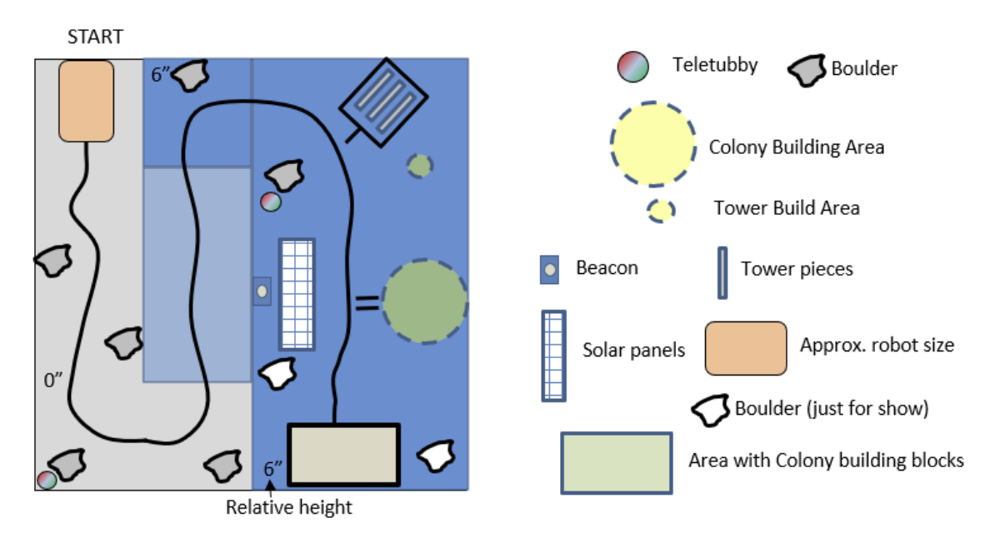
Mars Surface Simulation Field
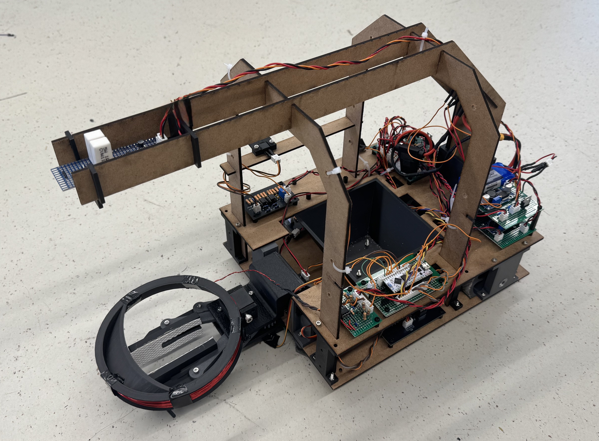
Final Assembled Robotics Platform
The mechanical chassis was designed to balance weight, durability, and modularity. We engineered the frame and mounting mechanisms in CAD, allowing for easy access to the electronics bay and secure placement of the mechanical claw, sensors, and drive motors. The robust drivetrain ensured the robot could smoothly navigate the uneven simulation surface while maintaining sensor alignment.
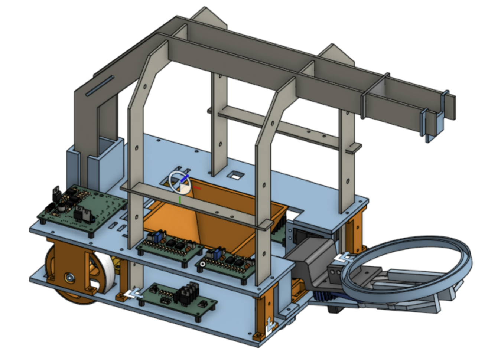
Mechanical Chassis CAD Assembly
I designed a suite of custom application-specific circuit boards to handle power delivery, motor actuation, and analog signal conditioning.
Engineered a multi-rail power distribution PCB to manage the robot's various voltage requirements. The board steps the main battery supply into a 21V boost rail, a 7V buck converter, and 5V/3.3V linear regulators to safely isolate sensitive logic levels from high-current actuator draw.
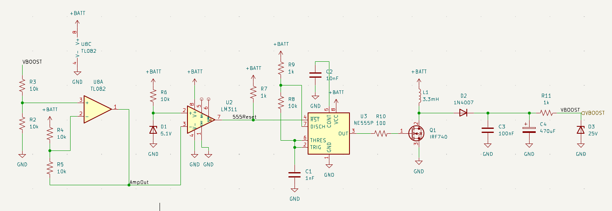
Schematic
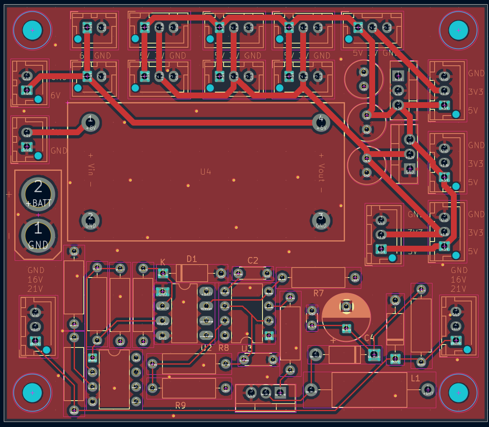
PCB Layout
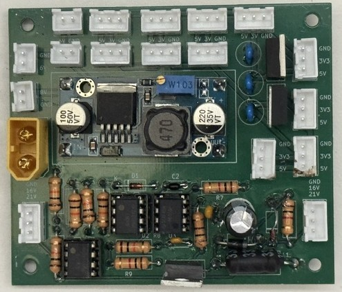
Physical Board
Designed a dedicated H-Bridge PCB to enable bi-directional motor control for the drivetrain. The layout prioritizes thermal dissipation and wide trace routing to handle sustained current loads during complex navigation maneuvers.
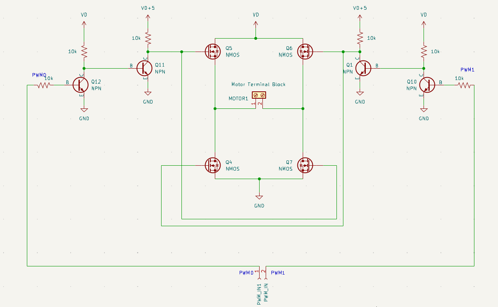
Schematic
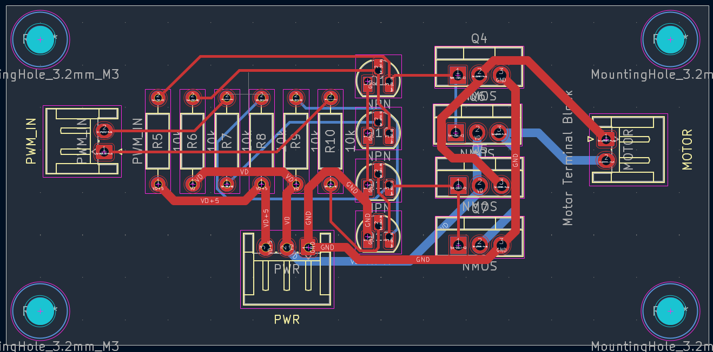
PCB Layout
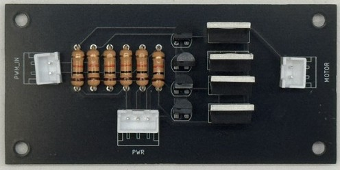
Physical Board
Developed a custom analog filter PCB specifically optimized for 10kHz infrared beacon detection. This hardware-level band-pass filtering isolates the target beacon signal from ambient light interference, drastically improving the robot's tracking reliability.
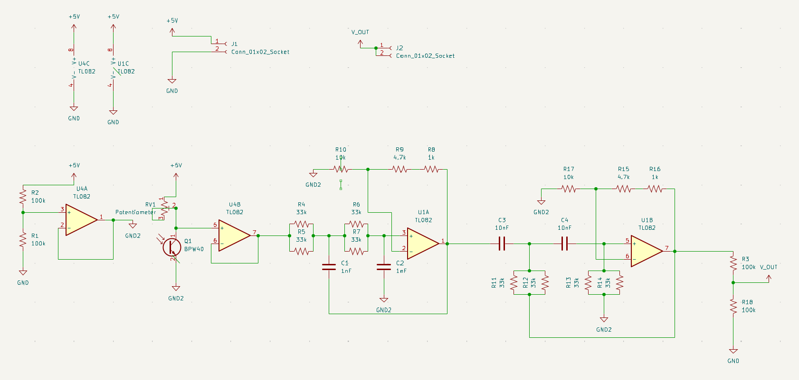
Schematic
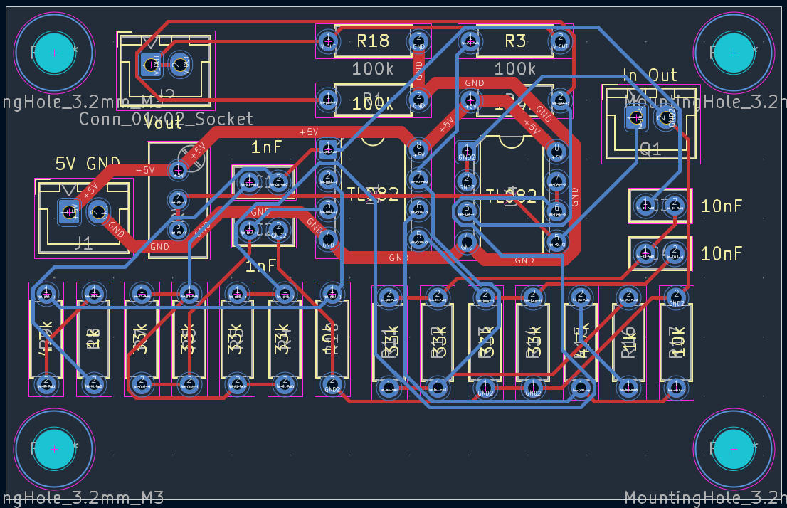
PCB Layout
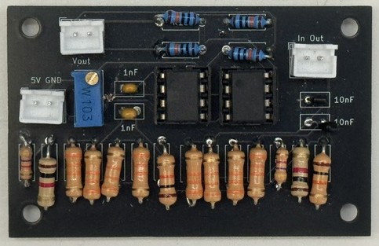
Physical Board
Built a custom metal detection circuit to identify specific subsurface targets during the simulation. Because this required rapid iteration and tuning, I elected to build this on a protoboard rather than a rigid PCB, allowing for quick component swapping during the testing phase.
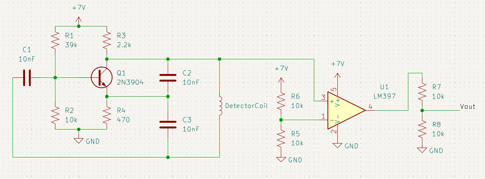
Schematic
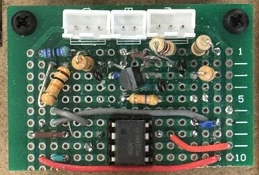
Physical Protoboard
Implemented an AI machine vision model using an ESP32-CAM module. This setup handled real-time image processing for high-accuracy object detection, allowing the robot to visually verify targets before initiating its grasping sequence.
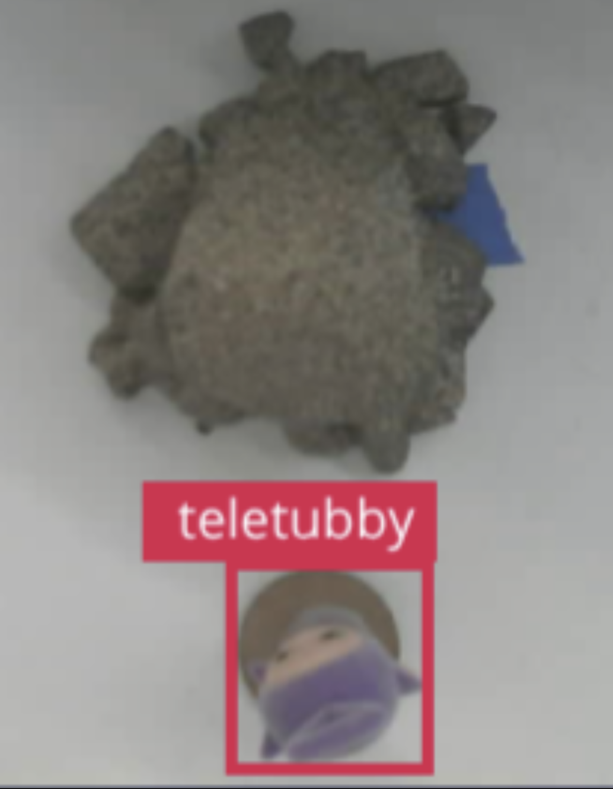
Engineered Proportional-Derivative (PD) control loops to manage the robot's navigation and motor actuation. By constantly calculating and adjusting for positional error, the drivetrain maintained smooth, predictable line-following and turning behavior.
Developed the core firmware using object-oriented C++ on an ESP32 microcontroller. The software architecture heavily utilized state machines to safely transition the robot between searching, tracking, grasping, and fault-handling states.
Browse the complete OOP architecture handling navigation, vision, and state progression.
#include "config.h"
#include "motor.h"
#include "drive_train.h"
#include "ultrasonic.h"
#include "camera.h"
#include "claw.h"
#include "metal_detector.h"
#include "tilt_sensor.h"
#include "LineFollower.h"
#include "ir_sensor.h"
#include "mission.h"
#include <Arduino.h>
// ---------------------------------------------------------------------------
// Pin definitions
// ---------------------------------------------------------------------------
// Drivetrain (known).
const int PWM_PIN_FORWARD_LEFT = 11;
const int PWM_PIN_REVERSE_LEFT = 10;
const int PWM_PIN_FORWARD_RIGHT = 12;
const int PWM_PIN_REVERSE_RIGHT = 13;
const int ENCODER_PIN1_RIGHT = 4;
const int ENCODER_PIN2_RIGHT = 3;
const int ENCODER_PIN1_LEFT = 1;
const int ENCODER_PIN2_LEFT = 2;
// Peripheral pins: TEMPORARY placeholders, fill in once wired.
const int ULTRA_TRIG_PIN = 40;
const int ULTRA_ECHO_PIN = 21;
const int CAMERA_IN_PIN = -1; // ESP -> camera (request a detection)
const int CAMERA_OUT_PIN = -1; // camera -> ESP (detection result)
const int CLAW_HAND_PIN = 16;
const int CLAW_ARM_PIN = 15;
const int METAL_PIN = 17;
const int IMU_SDA_PIN = 41; // MPU-6050 shares the I2C bus (SDA)
const int IMU_SCL_PIN = 42; // MPU-6050 shares the I2C bus (SCL)
const int LF_LEFT_PIN = 7;
const int LF_MID_PIN = 8;
const int LF_RIGHT_PIN = 9;
// Competition-surface select. The two surfaces differ ONLY in the solar-panel
// removal sequence; this pin (read once at boot) picks which parameter set the
// mission uses. A switch feeds 3V3 into the pin; INPUT_PULLDOWN holds it LOW when
// the switch is open. Switch closed/3V3/HIGH = surface 1, open/0V/LOW = surface 2.
// (GPIO 6 is free now that the OLED is gone.)
const int SURFACE_SELECT_PIN = 6;
// ---------------------------------------------------------------------------
// Object instantiation
// ---------------------------------------------------------------------------
Motor motorLeft(PWM_PIN_FORWARD_LEFT, PWM_PIN_REVERSE_LEFT, ENCODER_PIN1_LEFT, ENCODER_PIN2_LEFT,
robotConfig::WHEEL_1_DIAMETER, robotConfig::MOTOR1_POLARITY, robotConfig::leftSpeedToDuty);
Motor motorRight(PWM_PIN_FORWARD_RIGHT, PWM_PIN_REVERSE_RIGHT, ENCODER_PIN1_RIGHT, ENCODER_PIN2_RIGHT,
robotConfig::WHEEL_1_DIAMETER, robotConfig::MOTOR2_POLARITY, robotConfig::rightSpeedToDuty);
Drivetrain drivetrain(motorLeft, motorRight);
Ultrasonic ultrasonic(ULTRA_TRIG_PIN, ULTRA_ECHO_PIN);
Camera camera(CAMERA_IN_PIN, CAMERA_OUT_PIN);
Claw claw(CLAW_HAND_PIN, CLAW_ARM_PIN);
MetalDetector metalDetector(METAL_PIN);
TiltSensor tiltSensor(IMU_SDA_PIN, IMU_SCL_PIN);
LineFollower lineFollower; // logic only; ADC channels are owned by irSensor
IR_Sensor irSensor(robotConfig::IR_ADC_PIN, robotConfig::IR_SELECT_PIN,
LF_LEFT_PIN, LF_MID_PIN, LF_RIGHT_PIN);
Mission mission(drivetrain, ultrasonic, camera, claw, metalDetector, tiltSensor, lineFollower, irSensor);
void setup() {
Serial.begin(115200); // USB CDC: sweep-test debug output
motorLeft.begin();
motorRight.begin();
ultrasonic.begin();
camera.begin();
claw.begin();
metalDetector.begin();
tiltSensor.begin();
lineFollower.begin();
// Guarded: IR_Sensor::begin() aborts on an unset ADC pin, so only start it
// once IR_ADC_PIN is wired in config.h.
if (robotConfig::IR_ADC_PIN >= 0) irSensor.begin();
// Brief pause before the robot starts moving.
delay(1000);
// Sweep + centring disabled for now (line-following ramp focus): hop between
// clusters without the ultrasonic search, and skip the post-centre realign.
mission.enableRockSearch = true; // full sweep -> travel -> centre
// Per-rock sweep gate (only used in COLLECT). Example: sweep only rocks 4,5,6;
// rocks 1-3 hop straight into the scan. Indices are 0-based (rock1..rock6).
mission.sweepOnRock[0] = false; // rock 1
mission.sweepOnRock[1] = false; // rock 2
mission.sweepOnRock[2] = false; // rock 3
mission.sweepOnRock[3] = false; // rock 4
mission.sweepOnRock[4] = true; // rock 5
mission.sweepOnRock[5] = true; // rock 6
mission.enableTeletubbySweep = true; // ~5s camera scan once aligned on the rock
mission.enableMetalScan = true; // run the claw lower/scan/grab at each rock
mission.testMetalOnRock = 0; // 0 = use the real detector
mission.aimMode = Mission::AIM_EDGE_MIDPOINT; // aim at the midpoint of the two edges
mission.returnAfterCentre = true; // realign: reverse the travel/centre distance back to the arrival pose
// Surface select (read once at boot): switch feeds 3V3, pulldown holds LOW when
// open. 3V3/HIGH = surface 1, 0V/LOW = surface 2. Only the solar-panel removal
// parameters differ between the two surfaces.
pinMode(SURFACE_SELECT_PIN, INPUT_PULLDOWN);
mission.panelSurface = (digitalRead(SURFACE_SELECT_PIN) == LOW) ? 1 : 0;
Serial.printf("[SURFACE] pin%d %s -> surface %d\n", SURFACE_SELECT_PIN,
mission.panelSurface == 1 ? "LOW" : "HIGH", mission.panelSurface + 1);
// Surface 1 uses a slightly higher 10kHz IR threshold; surface 2 the default.
irSensor.useSurface1Threshold(mission.panelSurface == 0);
// TEST: panel phase. Jump straight to CREST -> FIND_LINE -> FOLLOW_LINE so the
// IR beacon detection can be tuned. Set back to COLLECT for a real run.
mission.phase = Mission::COLLECT;
mission.begin();
}
void loop() {
// Low-level control loops.
motorLeft.speed();
motorRight.speed();
drivetrain.update();
claw.update(); // advances the staged claw actions
ultrasonic.update(); // ping + filter + edge detection for the sweep
metalDetector.update(); // updates the running frequency / shift
tiltSensor.update(); // reads the MPU-6050, updates the ramp latch
irSensor.update(); // drains the IR DMA buffer + Goertzel (no-op until searching)
// Panel-test debug: print the IR beacon strength vs its per-tone threshold so
// the 1kHz/10kHz values can be calibrated. Throttled to 100ms while searching.
if (irSensor.sampling()) {
static unsigned long lastIrPrint = 0;
if (millis() - lastIrPrint >= 100) {
lastIrPrint = millis();
Serial.printf("[IR] f=%.0fHz mag=%.4f thr=%.4f %s | LF L=%d M=%d R=%d (thr=%d)\n",
irSensor.targetFreq(), irSensor.magnitude(),
irSensor.threshold(),
irSensor.detected() ? "DETECTED" : "searching",
irSensor.lfLeftRaw(), irSensor.lfMidRaw(), irSensor.lfRightRaw(),
robotConfig::LF_THRESHOLD);
}
}
// Tilt debug: an event line the moment the ramp latch flips, plus a live angle
// readout (throttled to 200ms) so rampOnAngle/rampOffAngle can be calibrated.
// Only prints once the MPU-6050 is actually detected on the bus.
if (tiltSensor.isPresent()) {
static bool lastOnRamp = false;
bool onRamp = tiltSensor.isOnRamp();
if (onRamp != lastOnRamp) {
Serial.printf("[TILT] ramp %s angle=%.1f deg\n",
onRamp ? "TRIGGERED" : "cleared", tiltSensor.getTiltAngle());
lastOnRamp = onRamp;
}
static unsigned long lastTiltPrint = 0;
if (millis() - lastTiltPrint >= 200) {
lastTiltPrint = millis();
Serial.printf("[TILT] angle=%.1f deg onRamp=%d\n",
tiltSensor.getTiltAngle(), onRamp ? 1 : 0);
}
}
// High-level mission state machine.
mission.update();
}#pragma once
#include <Arduino.h>
namespace robotConfig {
// Software Variables
inline constexpr int DRIVING_FREQUENCY = 2000;
inline constexpr int MAX_DUTY = 1023;
inline constexpr int PWM_RESOLUTION = 10;
inline constexpr int MOTOR1_POLARITY = 1;
inline constexpr int MOTOR2_POLARITY = 1;
inline constexpr int DOWNSAMPLING_FACTOR = 10;
inline constexpr int FORWARD = 1;
inline constexpr int REVERSE = -1;
inline constexpr int STOPPED = 0;
inline constexpr int PWM_DELAY = 10; // delay between switching pins
inline constexpr int MAX_SPEED_SAMPLE_COOLDOWN = 20; // ms
// Physical Constants
inline constexpr float WHEEL_1_DIAMETER = 79; //(mm)
inline constexpr float WHEEL_1_CIRCUMFERENCE = PI * WHEEL_1_DIAMETER;
inline constexpr float WHEEL_1_SINGLE_PULSE =
WHEEL_1_CIRCUMFERENCE / 1441; //(mm)
inline constexpr int PULSES_REV = 5764;
// Line Following Constants
inline constexpr float LF_KD = 0.1; // derivative coefficient
inline constexpr float LF_KP = 0.06; // proportional coefficient
inline constexpr int LF_THRESHOLD = 1500; // tape sensing
//Claw constants
inline constexpr int ARM_UP_ANGLE = 150;
inline constexpr int ARM_DOWN_ANGLE = 12;
inline constexpr int HAND_CLOSE_ANGLE = 3;
inline constexpr int HAND_OPEN_ANGLE = 90;
// IR Sensor Pins (TBD - fill in once wired)
inline constexpr int IR_ADC_PIN = 5; // analog input; must be an ADC1 pin (GPIO1-10 on the S3)
inline constexpr int IR_SELECT_PIN = 38; // HIGH = search 1kHz, LOW = search 10kHz
// Define mapping for the LEFT motor
// Define mapping for the LEFT motor
inline int leftSpeedToDuty(float speed) {
// Safety check to allow the motor to fully stop
if (speed <= 0.01f) return 0;
// Derived from your linear region (PWM 400 to 600)
int calculatedPWM = (1311.5 * speed) + 342;
// Cap it at max duty just to be safe
return constrain(calculatedPWM, 0, robotConfig::MAX_DUTY);
}
// Define mapping for the RIGHT motor
inline int rightSpeedToDuty(float speed) {
if (speed <= 0.01f) return 0;
// Applying the 1.07x multiplier for the right side
// Slope: 1311.5 * 1.07 = 1403.3
// Intercept: 342 * 1.07 = ~366
// int calculatedPWM = (1403.3 * speed) + 366;
int calculatedPWM = round(leftSpeedToDuty(speed) * 1.07f); // Round to nearest integer
return constrain(calculatedPWM, 0, robotConfig::MAX_DUTY);
}
}#pragma once
#include <Arduino.h>
#include "drive_train.h"
#include "ultrasonic.h"
#include "camera.h"
#include "claw.h"
#include "metal_detector.h"
#include "tilt_sensor.h"
#include "LineFollower.h"
#include "ir_sensor.h"
// Non-blocking mission state machine implementing the COLLECT phase of the
// robot FSM: dead-reckon between rock clusters, find/centre/scan/grab each
// rock, sweep for teletubbies, and climb the ramp to the UPPER deck, up to the
// point where phase is set to PANEL.
//
// Navigation model: PER-MOVE RELATIVE dead reckoning. Every hop just issues a
// fresh turn()+driveStraight() from wherever the robot currently is, so error
// resets each cluster and "re-zeroing odometry" is implicit (no global pose).
//
// Call update() every loop(). It expects drivetrain.update() and
// ultrasonic.update() to also be called every loop() by the caller.
// One leg of a dead-reckon hop: turn in place, then drive straight.
// angleDeg: + = clockwise / right, - = counter-clockwise / left.
struct HopLeg {
float angleDeg;
float distMM;
};
// All constants for the solar-panel removal "dance". There are two competition
// surfaces that differ ONLY in this sequence, so each surface gets its own set
// (selected at boot by the surface-select pin). Angles: + = right/CW, - = left/CCW.
struct PanelRemoveParams {
float predriveMM; // short straight (realign target = beacon trigger + this) before turn1
float turn1Deg; // first turn off the beacon spot
float driveMM; // straight leg (through the arch) after turn1
float turn2Deg; // second turn to finish the sequence
float turnSpeed; // speed for the two turns
float driveSpeed; // speed for the straight legs
int armAngle; // arm hover angle over the panel (hand stays closed)
unsigned long armSettleMs; // time for the arm to reach that angle
};
class Mission {
public:
static constexpr int MAX_HOP_LEGS = 3; // max legs any one cluster can use
enum Phase { COLLECT, PANEL, DONE };
enum Level { LOWER, UPPER };
// Where to aim once a rock passes validation.
enum AimMode {
AIM_CENTROID, // average of all on-rock sweep samples (robust to lumps)
AIM_MIN_DISTANCE, // angle of the single closest reading
AIM_EDGE_MIDPOINT // midpoint of the two detected edges (original)
};
enum State {
ROUTER, // n18: dispatch on phase
// --- collection ---
HOP_TO_CLUSTER, // n1: dead-reckon to next cluster (or divert to ramp)
FIND_ROCK, // n2: wide ultrasonic sweep
FIND_ROCK_RETRY, // rock-2 failsafe: nudge +SWEEP_RETRY_TURN_DEG, then re-sweep
FAIL_TELETUBBY_SCAN, // rock-5/6 failsafe: return to arrival pose, scan teletubby, advance
TRAVEL_TO_ROCK, // n3: drive up to grab distance
CENTRE_ROCK, // n4: face the rock, capture metal reference
TELETUBBY_SWEEP, // n5: camera sweep for coloured blobs
POINT_TELETUBBY, // n9: pivot to point at the blob
RECENTRE_ROCK, // n24: pivot back onto the rock
NEED_METAL, // n22: still need the metal rock?
LOWER_CLAW, // n6: lower claw / detector
SCAN_METAL, // n7: read detector
ENGAGE_CLAW, // n8: close claw
STORE_ROCK, // n10: store in basket
RAISE_CLAW, // n16: raise claw (decoy)
ADVANCE_CLUSTER, // n12: rocks_visited += 1
ALL_DONE, // n23: all rocks done? -> maybe phase = PANEL
SWEEP_TEST_RECENTER, // bench test: return to neutral heading, re-sweep
// --- panel phase (after collection): crest -> find/follow line to panel -
CREST, // n26: on the upper deck; hand off to the panel line
FIND_LINE, // rotate (negative/CCW) until the LF sees the tape
FOLLOW_LINE, // follow the tape until the IR panel beacon reads high
PANEL_REMOVE, // removal dance: lower -> realign+predrive -> turn1 -> drive -> turn2
// --- ramp climb via line following (COLLECT, after rock 4) ---
RAMP_FIND_LINE, // rotate until the LF sees the tape at the ramp foot
RAMP_FOLLOW_LINE, // follow the tape up the ramp until the crest, then hop to rock 5
// --- ramp (old dead-reckoned approach; unused now) ---
RAMP_APPROACH, // n27: dead-reckon to ramp foot, watch tilt
RAMP_CLIMB, // n25: climb until flat (crest)
RAMP_RECOVERY, // n30: re-acquire / last-resort assume crest
// --- terminal (out of scope for this pass) ---
HOLD // phase == PANEL/DONE: stop and hold
};
Mission(Drivetrain& dt, Ultrasonic& us, Camera& cam, Claw& cl,
MetalDetector& md, TiltSensor& ts, LineFollower& lf, IR_Sensor& irs);
void begin();
void update();
// ---- Manual / bench-test controls ----
// Force the FSM into any state (resets its sub-step + timer). Note: states
// that consume per-rock values (rockBearing, metalReference, ...) assume an
// earlier state set them, so jumping mid-flow may act on stale values.
void jumpTo(State s);
// Bypass the scanning-heavy states so you can exercise just the
// hop -> find -> travel -> centre navigation spine.
bool enableRockSearch = true; // MASTER: false skips find/travel/centre
// (n2-n4) at EVERY rock; with metal
// scan on, hop straight into the claw
// sequence at each rock
// Per-rock sweep gate, ANDed with enableRockSearch. Indexed by rocks_visited
// (0-based): [0]=rock1 [1]=rock2 [2]=rock3 [3]=rock4 [4]=rock5 [5]=rock6. A
// rock left false skips the sweep/travel/centre and goes straight to the scan
// at the dead-reckoned arrival pose. Default: sweep every rock.
bool sweepOnRock[6] = { false, false, false, false, true, true };
bool enableTeletubbySweep = true; // false: skip the camera sweep (n5)
bool enableMetalScan = true; // false: skip lower/scan/grab (n6-n10,n16)
// Competition-surface select: 0 = surface 1, 1 = surface 2. The two surfaces
// differ ONLY in the solar-panel removal dance (see panelParams). main.cpp sets
// this at boot from the surface-select pin.
int panelSurface = 0;
// Panel line-acquire spin direction, per rock the robot heads to the panel
// FROM -- either an EARLY EXIT (both objectives met before rock 6) or rock 6's
// normal completion. The robot faces the panel line differently at each rock,
// so it spins CW (true) or CCW (false) to catch it. Indexed 0-based:
// [0]=rock1 [1]=rock2 [2]=rock3 [3]=rock4 [4]=rock5 [5]=rock6. Rock 1 is unused
// (can't have both objectives that early).
bool crestSpinCWByRock[6] = { false, true, false, false, true, false };
// rock1 r2 r3 r4 r5 r6
// After rock 4, climb the ramp by FOLLOWING THE LINE (not dead reckoning),
// detect the crest, then start the dead-reckoned hop to rock 5 (HOP_LEGS[4]).
// false: hop straight over the ramp as before. Requires the IR pins wired
// (the LF channels ride the IR sensor's DMA scan).
bool enableRampLineFollow = true;
// TEMP TEST: stop and hold at the ramp crest instead of starting the hop to
// rock 5, so the crest detection can be checked in isolation. Set false to
// resume the normal flow (crest -> HOP_LEGS[4]).
bool pauseAtCrest = false;
// TEST hook for the metal decision:
// 0 = use the real detector
// N = force "metal" only when scanning rock N (1-based)
// -1 = force every rock to read as a decoy (no metal)
// Any non-zero value also skips the real detector's hardware calls.
int testMetalOnRock = 0;
// Aim point once a rock is validated (see AimMode). Centroid is most robust
// for rough rocks; edge-midpoint is the original; min-distance the nearest bump.
AimMode aimMode = AIM_CENTROID;
// TEST: after centring, drive back to the position the robot arrived at from
// the hop (undo the sweep/travel/centre excursion), then hop as normal. Lets
// you exercise sweep centring without it disturbing the dead-reckoned path.
// Assumes a single sweep pass (SWEEP_PASSES == 1).
bool returnAfterCentre = false;
// TEST MODE (at-rock procedure): simulate the robot just arriving at a rock.
// Combine with jumpTo(FIND_ROCK) at startup to skip the hop and run the whole
// per-rock procedure once -- sweep -> travel -> centre -> teletubby -> metal
// -> claw -- then realign to the arrival pose (honouring returnAfterCentre)
// and HOLD instead of counting the rock and hopping onward. Lets you observe
// the at-rock behaviour in isolation, on the bench, over and over.
bool stopAfterRock = false;
// BENCH TEST (stationary sweep): jump straight to FIND_ROCK at startup and,
// instead of travelling to the rock, print the sweep result over Serial then
// recenter and sweep again -- forever. Lets you watch the edge detection in
// place. Serial prints every edge (accepted or ignored) with its delta angle.
bool sweepTestMode = false;
// Mission variables (Init / Variables block of the FSM).
Phase phase = COLLECT; // COLLECT / PANEL / DONE
Level level = LOWER; // which deck we are on
int rock = 0; // metal rock collected (max 1)
int teletubbies = 0; // confident teletubbies found (max 2)
int rocks_visited = 0; // clusters checked so far (max 6)
State state = ROUTER;
// ---- Edge-event debug (updated live during the FIND_ROCK sweep) ----
// Every start/end edge the sweep detects (whether or not the accept logic
// keeps it) is latched here for debug/inspection.
// edgeEventSeq bumps on each edge so a caller can tell when a new one fired.
Ultrasonic::EdgeEvent lastEdgeEvent = Ultrasonic::NONE;
float lastEdgeDeltaDeg = 0.0f; // deg from the start of the sweep arc
unsigned long edgeEventSeq = 0; // increments on each detected edge
// ---- Sweep result summary (published when a FIND_ROCK sweep finishes) ----
// Angles are degrees INTO the sweep arc (0 at the far-left start, up to
// SWEEP_ARC at the far-right end). Distance is the closest reading seen.
// sweepResultSeq bumps once per completed sweep so the caller can redraw.
float sweepStartAngle = 0.0f; // first start edge
float sweepEndAngle = 0.0f; // last end edge
float sweepDistanceCm = 0.0f; // closest reading during the sweep
bool sweepFound = false; // did the sweep validate a rock
unsigned long sweepResultSeq = 0;
private:
void enter(State s); // transition helper: resets sub-step + timer
bool driveIdle(); // drivetrain finished its current move
float sweepHeadingDeg(float arcDeg); // heading during an active sweep turn
// Global interrupts (checked every loop; placeholders for now).
bool checkStall();
bool checkTimeLow();
// Driver references.
Drivetrain& drive;
Ultrasonic& ultra;
Camera& camera;
Claw& claw;
MetalDetector& metal;
TiltSensor& tilt;
LineFollower& line;
IR_Sensor& ir;
// Per-state bookkeeping.
int subStep = 0;
int hopLeg = 0; // which leg of the current hop we are on
int centreAttempts = 0; // distance-correction passes in CENTRE_ROCK
int sweepPass = 0; // sweep+centre passes done at this rock
int approachAttempts = 0; // sweep->travel tries at this rock (capped so a
// rock we can't close on doesn't loop forever)
bool rockSweepRetried = false; // rock-2 failsafe: a second sweep (after a +deg
// nudge) has already been tried at this rock
float clusterHeading = 0.0f; // net rotation (deg) added by the sweep/approach
// since the hop finished; undone before the next hop
float excursionOriginMM = 0.0f;// both-wheel odometer reading captured at the
// arrival pose; the baseline the excursion is
// measured from
float excursionForward = 0.0f; // net forward distance (mm) driven since arrival
// (travel + centre), read from the odometer at
// ADVANCE and reversed to realign
unsigned long stateTimer = 0;
// Ramp line-follow bookkeeping.
float rampClimbOriginMM = 0.0f; // odometer baseline captured when the climb starts
bool rampWasTilted = false; // tilt sensor latched onto the incline during the climb
// Panel FOLLOW_LINE ramp-PWM crest (an early exit runs the panel line up the
// ramp): drop from RAMP_BASE_PWM to LINE_BASE_PWM once we crest by tilt OR by
// climbing rampClimbMaxMM() (per surface) past the ramp foot (distance fallback if
// tilt never clears). Latched so we never climb back onto ramp PWM after cresting.
bool panelRampWasTilted = false; // tilt latched onto the incline during the panel follow
bool panelRampCrested = false; // crest reached -> stay on the slower line PWM
float panelRampOriginMM = 0.0f; // odometer at ramp entry; climb distance measured from here
float panelRampTime = 0.0f; // ms when the ramp was first detected (for RAMP_MIN_TIME)
bool earlyExitClimb = false; // this run early-exited on the LOWER deck (rock <=4),
// so the panel line climbs the ramp -> crest creep applies
unsigned long panelCrestCreepUntil = 0; // creep at CREST_CREEP_PWM until this ms (0 = none)
float crestForwardOriginMM = 0.0f; // odometer at the crest; the momentum coast is measured from here
bool absorbCrestMomentum = false; // hop-5's first drive rides the ramp momentum, then trims to distance
bool crestSpinCW = false; // active panel line-acquire spin direction (latched per rock)
// Panel beacon-align bookkeeping.
float irTriggerMM = 0.0f; // odometer position where the beacon first crossed threshold
bool irTriggerValid = false; // have we latched a trigger position this FOLLOW_LINE
bool irWasAbove = false; // was the beacon above threshold on the previous window
unsigned long irConsiderAfterMs = 0; // ignore IR beacon reads until this ms (early-exit cooldown)
// Per-rock working values.
float rockBearing = 0.0f; // deg from post-hop forward
float startEdgeAngle = 0.0f;
float endEdgeAngle = 0.0f;
bool foundStartEdge = false;
bool foundEndEdge = false;
float minSweepDistance = 0.0f; // closest valid reading seen during the sweep
float minSweepAngle = 0.0f; // heading at that closest reading
int metalSampleCount = 0; // confirmation samples taken in SCAN_METAL
bool metalAllAbove = false; // have all samples so far cleared the threshold
float sumOnRockAngle = 0.0f; // running sum of on-rock sample angles (centroid)
long onRockCount = 0; // number of on-rock samples in that sum
float teletubbyBearing = 0.0f; // deg from rock-forward
// ---------------- Temporary tuning values ----------------
// Hardcoded placeholders; each measured on the real field later.
//
// Hop path to each cluster, indexed by rocks_visited (0 = hop to rock 1,
// 1 = hop to rock 2, 2 = hop to rock 3, ...). Each hop is a list of legs;
// every leg turns (deg: + = right/CW, - = left/CCW) then drives (mm).
// Measured from the PREVIOUS rock so error resets every cluster.
// HOP_LEG_COUNT says how many legs of each row are actually used.
int HOP_LEG_COUNT[6] = {2, 3, 1, 2, 2, 1}; // rock 3 (index 2) uses 2 legs
HopLeg HOP_LEGS[6][MAX_HOP_LEGS] = {
{ {0,583},{22, 175} }, // -> rock 1
{ {-45, 275},{45, 400},{-65,20} }, // -> rock 2
{ {41.5, 330}, }, // -> rock 3: two legs (turn right, then left)
{ {-35, 190}, {-29.5, 285} }, // -> rock 4
{ {0, 220} }, // -> (ramp){-50, 350} , {-54.5, 1500}rock 5 (upper deck, after ramp)
{ {90, 120} }, // -> rock 6 (upper deck)
};
float HOP_TURN_SPEED = 0.15; // speed for the in-place turn portion of a hop leg
float HOP_DRIVE_SPEED = 0.20; // speed for the drive-straight portion of a hop leg
// Surface 2 crests the ramp earlier (shorter distance cap), so its hop to rock 5
// (HOP_LEGS[4]) must reach this much further. Surface 1 uses the leg distance as
// written. Applied only to rock 5's DRIVING leg(s) -- a padding {0,0} leg stays 0.
float SURFACE2_ROCK5_HOP_EXTRA_MM = 100.0f;
float hopLegDistMM(int idx, int leg) const {
float d = HOP_LEGS[idx][leg].distMM;
if (idx == 4 && panelSurface == 1 && d != 0.0f) d += SURFACE2_ROCK5_HOP_EXTRA_MM;
return d;
}
float SWEEP_ARC = 65.0f; // deg, wide arc to cover drift
float SWEEP_SPEED = 0.15f;
int SWEEP_PASSES = 1; // sweep+centre passes per rock (2 = one refine pass)
float SWEEP_RETRY_TURN_DEG = 20.0f; // rock-2 failsafe: nudge this far (+ = CW) then
// re-sweep once if the first sweep finds nothing
// (tracked in clusterHeading so realign undoes it)
float MIN_ROCK_ANGLE = 3.0f; // deg between start/end edges to count as a rock
float GRAB_DISTANCE_CM = 15.0f; // target ultrasonic distance at the rock
float CENTRE_MARGIN_CM = 3.0f; // acceptable +/- error from the target
float CENTRE_SPEED = 0.12f; // slow speed for distance corrections
unsigned long CENTRE_SETTLE_MS = 250; // let the filter settle before measuring
int CENTRE_MAX_TRIES = 7; // give up correcting after this many passes
float TRAVEL_MAX_MM = 500.0f; // give-up distance driving toward a rock
float TRAVEL_SPEED = 0.15f;
int APPROACH_MAX_TRIES = 3; // sweep->travel attempts before abandoning
// the rock (prevents an endless re-approach)
// Metal scan: the baseline is tared at hover (clear of the rear metal) after
// letting the frequency filter settle there, then we wait for it to settle
// again at the lowered position before reading the shift.
unsigned long HOVER_SETTLE_MS = 800; // filter settle at hover before tare
unsigned long SCAN_SETTLE_MS = 500; // wait after lowering before sampling
// Confirmation: after settling, require this many readings, spaced apart,
// to ALL clear the threshold before we grab (rejects the lowering spike).
int METAL_SAMPLE_COUNT = 3;
unsigned long METAL_SAMPLE_SPACING_MS = 200;
unsigned long CAMERA_PRESCAN_DELAY_MS = 500; // settle before triggering the camera
unsigned long POINT_DWELL_MS = 300; // pause while pointing at a teletubby
// Panel phase: rotate to find the tape, follow it, then stop on the IR beacon.
// PWM duty is raw (0..MAX_DUTY = 1023); motors need ~350+ to move.
int LINE_SEEK_PWM = 600; // in-place rotation speed while hunting for the tape
int LINE_BASE_PWM = 600; // forward speed while following the tape at the PANEL
int RAMP_BASE_PWM = 800; // forward speed while following the tape up the RAMP (needs more to climb)
// Right after cresting on an EARLY-EXIT run that climbed the ramp (both
// objectives met at/before rock 4), creep at this reduced PWM for CREST_CREEP_MS
// to settle onto the flat top before resuming LINE_BASE_PWM.
int CREST_CREEP_PWM = 350; // gentle PWM just after the crest
unsigned long CREST_CREEP_MS = 2000; // how long to hold CREST_CREEP_PWM
float LINE_RIGHT_SCALE = 1.07f; // right motor is weaker: scale its PWM up to match
// The stop condition (IR beacon) uses IR_Sensor::detected(), which applies the
// per-tone threshold THRESHOLD_1K / THRESHOLD_10K in ir_sensor.h (selected by
// IR_SELECT_PIN). Tune those two from the [IR] strength printed over Serial.
// On detection the robot reverses back to where the amplitude FIRST crossed the
// threshold (it drifts past during the confirm windows + coast), so the final
// stop is repeatable. Skip the reverse if the overshoot is under this (mm).
float IR_ALIGN_DEADBAND_MM = 5.0f;
// On an early-exit-before-ramp run the panel line climbs the ramp before reaching
// the beacon, so ignore the IR sensor for this long after the search starts (at
// CREST) to avoid a false trigger during the climb. Only applied on those runs.
unsigned long IR_COOLDOWN_MS = 5000;
// Panel removal "dance" (runs once the beacon trips in FOLLOW_LINE): lower the
// arm (hand stays closed), realign to the beacon trigger + a short pre-drive,
// then turn1 -> straight -> turn2 to sweep the panel off. The TWO competition
// surfaces differ ONLY here, so each has its own parameter set; the active one
// is chosen at boot by panelSurface (0 = surface 1, 1 = surface 2), which
// main.cpp sets from the surface-select pin. Fields: see PanelRemoveParams.
// predrive turn1 drive turn2 tSpd dSpd arm settle
PanelRemoveParams panelParams[2] = {
/* surface 1 */ { 45.0f, 85.0f, 140.0f, -90.0f, 0.22f, 0.15f, 47, 700 },
/* surface 2 */ { 50.0f, 85.0f, 120.0f, -90.0f, 0.22f, 0.15f, 47, 700 },
};
// The active surface's removal parameters (panelSurface is public config below).
PanelRemoveParams& panel() { return panelParams[panelSurface]; }
// Ramp climb via line following (after rock 4). The crest is detected by the
// tilt sensor (latched onto the incline, then back to flat). Until the IMU is
// pinned in (tilt.isPresent()==false) that can't fire, so this odometry cap on
// the forward climb distance is the fallback crest trigger -- and a safety
// cap even once the IMU works. Tune to just past the ramp length. The ramp
// length differs slightly between the two competition surfaces, so this is
// per-surface (selected by panelSurface); read it via rampClimbMaxMM().
float RAMP_CLIMB_MAX_MM_BY_SURFACE[2] = { 1450.0f, 1400.0f }; // [0]=surface 1, [1]=surface 2
float rampClimbMaxMM() const { return RAMP_CLIMB_MAX_MM_BY_SURFACE[panelSurface == 1 ? 1 : 0]; }
// Ramp (old dead-reckoned approach; unused now).
float RAMP_APPROACH_MM = 1000.0f;
float RAMP_CLIMB_MM = 1000.0f;
float RAMP_SPEED = 0.20f;
unsigned long RAMP_SEARCH_MAX_MS = 4000; // no tilt by here -> recovery
unsigned long CLIMB_MAX_MS = 6000; // no crest by here -> recovery
unsigned long RAMP_MIN_CLIMB_MS = 800; // ignore "flat" right after entry
float RAMP_MIN_TIME = 1000.0f; // ms, ignore tilt events until this long after the climb starts
float rampTime = 0.0f;
};#include "mission.h"
Mission::Mission(Drivetrain& dt, Ultrasonic& us, Camera& cam, Claw& cl,
MetalDetector& md, TiltSensor& ts, LineFollower& lf, IR_Sensor& irs)
: drive(dt), ultra(us), camera(cam), claw(cl),
metal(md), tilt(ts), line(lf), ir(irs) {}
void Mission::begin() {
// Baseline the forward odometer at the spawn pose. A normal run re-baselines
// at each cluster arrival (HOP_TO_CLUSTER); the at-rock test skips the hop, so
// this spawn baseline is what its realignment measures against.
excursionOriginMM = drive.forwardOdometryMM();
enter(ROUTER);
}
void Mission::jumpTo(State s) {
enter(s);
}
// -------- helpers ----------------------------------------------------------
void Mission::enter(State s) {
state = s;
subStep = 0;
stateTimer = millis();
if (s == CENTRE_ROCK) centreAttempts = 0; // fresh distance-correction loop
}
bool Mission::driveIdle() {
return drive.state == Drivetrain::Idle;
}
// Heading (deg, relative to the sweep-start forward) during an active +arc turn
// that runs from -arc/2 up to +arc/2.
float Mission::sweepHeadingDeg(float arcDeg) {
return -arcDeg / 2.0f + arcDeg * drive.moveProgress();
}
// Global interrupts, checked every loop (placeholders for now).
bool Mission::checkStall() {
// TODO: detect a stall (commanded to move but encoders not changing) and
// recover, then resume. Raise the threshold while climbing the ramp.
return false;
}
bool Mission::checkTimeLow() {
// TODO: when the run clock is low, abandon remaining clusters and head for
// the panel (via the ramp if still on the LOWER deck).
return false;
}
// -------- main update ------------------------------------------------------
void Mission::update() {
// Global interrupts are checked every loop, not drawn as edges.
if (checkStall()) { /* TODO: recover then resume */ }
if (checkTimeLow()) { /* TODO: abandon clusters, head for panel */ }
switch (state) {
// ---- n18: Phase Router ------------------------------------------------
case ROUTER:
if (phase == COLLECT) {
enter(HOP_TO_CLUSTER);
} else if (phase == PANEL) {
enter(CREST); // panel phase: crest -> find line -> follow to panel
} else {
enter(HOLD);
}
break;
// ---- n1: Dead-reckon to next cluster ----------------------------------
case HOP_TO_CLUSTER: {
int idx = rocks_visited;
if (idx > 5) idx = 5; // defensive clamp
if (subStep == 0) {
// Before the hop to rock 5 (rocks_visited == 4), climb the ramp by
// following the line. Once we crest, RAMP_FOLLOW_LINE sets level=UPPER
// and returns here; the level==LOWER guard is then false so we fall
// through to the normal dead-reckoned hop (HOP_LEGS[4]) from the top.
if (idx == 4 && level == LOWER && enableRampLineFollow) {
enter(RAMP_FIND_LINE);
break;
}
// Start the first leg of the hop path. Skip the turn if it's a
// zero-angle leg (issuing a 0-magnitude move makes the drivetrain
// jitter in place instead of finishing).
hopLeg = 0;
if (HOP_LEGS[idx][hopLeg].angleDeg != 0.0f) {
drive.turn(HOP_LEGS[idx][hopLeg].angleDeg, HOP_TURN_SPEED);
}
subStep = 1;
} else if (subStep == 1) {
// Turn finished (or none issued): drive this leg's straight segment.
// Skip the drive on a zero-distance leg so a rotation-only leg works.
if (driveIdle()) {
if (absorbCrestMomentum) {
// First drive off the ramp crest: ride the climb momentum. Wait
// for the coast to fully stop, then drive only the REMAINING
// distance so the net forward from the crest equals this leg's
// distance. A long coast just needs a small (or reverse) trim.
float settleThresh = 0.03f;
if (fabs(drive.leftMotor.speed()) > settleThresh ||
fabs(drive.rightMotor.speed()) > settleThresh) {
break; // still coasting; keep waiting
}
float coasted = drive.forwardOdometryMM() - crestForwardOriginMM;
float target = hopLegDistMM(idx, hopLeg); // per-surface (rock-5 bump)
float move = target - coasted;
if (fabs(move) > 2.0f) {
drive.driveStraight(move, HOP_DRIVE_SPEED);
}
Serial.printf("[RAMP] crest coast %.0f mm -> trim %.0f (target %.0f)\n",
coasted, move, target);
absorbCrestMomentum = false;
} else if (hopLegDistMM(idx, hopLeg) != 0.0f) {
drive.driveStraight(hopLegDistMM(idx, hopLeg), HOP_DRIVE_SPEED);
}
subStep = 2;
}
} else { // subStep == 2
if (driveIdle()) {
hopLeg++;
if (hopLeg < HOP_LEG_COUNT[idx]) {
// More legs to go: turn into the next one (skip if zero).
if (HOP_LEGS[idx][hopLeg].angleDeg != 0.0f) {
drive.turn(HOP_LEGS[idx][hopLeg].angleDeg, HOP_TURN_SPEED);
}
subStep = 1;
} else {
// Whole path done: this arrival heading is the reference the
// next hop is measured from. Start tracking excursion rotation.
clusterHeading = 0.0f;
excursionOriginMM = drive.forwardOdometryMM(); // arrival baseline
sweepPass = 0; // fresh rock: start the sweep-pass count over
approachAttempts = 0; // and its re-approach retry count
rockSweepRetried = false; // and the rock-2 failsafe re-sweep
// NOTE: no tilt->ramp cross-check here. The ramp is entered
// deliberately at rocks_visited==4 (subStep 0 -> FIND_LINE), so
// a stray isOnRamp() latch (e.g. a grab/turn jolt spiking the
// gyro-fused tilt) must NOT divert us mid-collection.
if (enableRockSearch && sweepOnRock[idx]) {
enter(FIND_ROCK);
} else if (enableMetalScan || enableTeletubbySweep) {
// No search/centre, but still run the camera scan (if
// enabled) BEFORE lowering the claw. TELETUBBY_SWEEP
// self-bypasses to NEED_METAL when the camera is off, and
// NEED_METAL skips the claw when metal scan is off.
enter(TELETUBBY_SWEEP);
} else {
enter(ADVANCE_CLUSTER); // nav-only: skip the search
}
}
}
}
break;
}
// ---- n2: Find Rock (wide ultrasonic sweep) ----------------------------
case FIND_ROCK:
if (subStep == 0) {
// Rotate to the start of the arc.
drive.turn(-SWEEP_ARC / 2.0f, SWEEP_SPEED);
clusterHeading += -SWEEP_ARC / 2.0f;
subStep = 1;
} else if (subStep == 1) {
if (driveIdle()) {
// Sweep across the full arc while polling the ultrasonic.
// beginScan() wipes stale readings so no pre-sweep data can
// trigger a false edge.
ultra.beginScan();
foundStartEdge = false;
foundEndEdge = false;
minSweepDistance = Ultrasonic::MAX_VALID_DISTANCE; // nothing closer yet
minSweepAngle = 0.0f;
sumOnRockAngle = 0.0f;
onRockCount = 0;
drive.turn(SWEEP_ARC, SWEEP_SPEED);
clusterHeading += SWEEP_ARC;
Serial.printf("[SWEEP] --- sweeping %.0f deg arc ---\n", SWEEP_ARC);
subStep = 2;
}
} else { // subStep == 2: sweeping
// Readings glitch as the beam glances off a rock's edges, so we
// don't trust the distance to "confirm" the rock. Instead we take
// the FIRST start edge and the LAST end edge (collapsing any edge
// flicker into one span) and validate by angular width below.
Ultrasonic::EdgeEvent e = ultra.checkEdgeEvents();
float h = sweepHeadingDeg(SWEEP_ARC);
// Latch EVERY edge (accepted or not) for debug/inspection: which
// edge it was and how many degrees into the sweep arc it fired.
if (e == Ultrasonic::START_EDGE || e == Ultrasonic::END_EDGE) {
lastEdgeEvent = e;
lastEdgeDeltaDeg = h; // deg from sweep start
edgeEventSeq++;
// Print EVERY edge, whether the accept logic below keeps it or
// not. A START is kept only as the first one; an END is kept only
// once a START has been seen.
bool accepted = (e == Ultrasonic::START_EDGE) ? !foundStartEdge
: foundStartEdge;
Serial.printf("[SWEEP] %-5s edge @ %6.1f deg dist=%5.1f cm %s\n",
e == Ultrasonic::START_EDGE ? "START" : "END",
h, ultra.filteredDistanceCm,
accepted ? "(accepted)" : "(ignored)");
}
if (e == Ultrasonic::START_EDGE) {
if (!foundStartEdge) { // keep the first entry
foundStartEdge = true;
startEdgeAngle = h;
}
} else if (e == Ultrasonic::END_EDGE && foundStartEdge) {
foundEndEdge = true;
endEdgeAngle = h; // keep updating to the last exit
}
// Track the closest valid reading + its angle (the rock's nearest
// point), used as the aim point in AIM_MIN_DISTANCE mode.
float d = ultra.filteredDistanceCm;
if (d > 0 && d < minSweepDistance) {
minSweepDistance = d;
minSweepAngle = h;
}
// Accumulate the angular centroid: average the heading over every
// sample where the edge detector says we are on the object. Uses the
// whole silhouette, so a single surface bump can't drag the aim off
// centre the way the nearest-point does on a rough rock.
if (ultra.scanState == Ultrasonic::TRACKING_OBJECT) {
sumOnRockAngle += h;
onRockCount++;
}
if (driveIdle()) {
// A real rock subtends a big enough angle between its edges;
// a noise glitch collapses to a tiny span. Require both edges
// AND a wide enough gap.
float rockWidth = endEdgeAngle - startEdgeAngle;
if (rockWidth < 0) rockWidth = -rockWidth;
// Publish the sweep result for debug/inspection (angles as deg
// into the sweep arc; distance = closest reading seen).
sweepFound = (foundStartEdge && foundEndEdge && rockWidth >= MIN_ROCK_ANGLE);
sweepStartAngle = startEdgeAngle;
sweepEndAngle = endEdgeAngle;
sweepDistanceCm = minSweepDistance;
sweepResultSeq++;
Serial.printf("[SWEEP] DONE start=%.1f end=%.1f width=%.1f (min=%.1f) "
"startEdge=%s endEdge=%s dist=%.1f cm -> %s\n",
startEdgeAngle, endEdgeAngle, rockWidth, MIN_ROCK_ANGLE,
foundStartEdge ? "yes" : "no",
foundEndEdge ? "yes" : "no",
minSweepDistance, sweepFound ? "ROCK" : "no rock");
// Bench test: don't travel anywhere. If we found a rock, stop and
// hold indefinitely so the result stays on screen/Serial. If not,
// recenter and sweep again.
if (sweepTestMode) {
if (sweepFound) {
drive.stop();
Serial.println("[SWEEP] rock found -- holding.");
enter(HOLD);
} else {
enter(SWEEP_TEST_RECENTER);
}
break;
}
if (foundStartEdge && foundEndEdge && rockWidth >= MIN_ROCK_ANGLE) {
float edgeMidpoint = (startEdgeAngle + endEdgeAngle) / 2.0f;
switch (aimMode) {
case AIM_CENTROID:
// Fall back to the edge midpoint if we somehow have
// no on-rock samples.
rockBearing = (onRockCount > 0)
? (sumOnRockAngle / (float)onRockCount)
: edgeMidpoint;
break;
case AIM_MIN_DISTANCE:
rockBearing = minSweepAngle;
break;
case AIM_EDGE_MIDPOINT:
default:
rockBearing = edgeMidpoint;
break;
}
enter(TRAVEL_TO_ROCK);
} else if (rocks_visited == 1 && !rockSweepRetried) {
// Rock-2 failsafe: the first sweep found nothing. Nudge +20 deg
// (SWEEP_RETRY_TURN_DEG) and sweep once more. The turn goes into
// clusterHeading like every other sweep rotation, so if this
// second sweep also fails, ADVANCE_CLUSTER's realign undoes it.
rockSweepRetried = true;
drive.turn(SWEEP_RETRY_TURN_DEG, SWEEP_SPEED);
clusterHeading += SWEEP_RETRY_TURN_DEG;
Serial.printf("[SWEEP] rock 2 miss -- retry after +%.0f deg nudge\n",
SWEEP_RETRY_TURN_DEG);
enter(FIND_ROCK_RETRY);
} else if (rocks_visited == 4 || rocks_visited == 5) {
// Rock 5 or 6 failsafe: we couldn't find the rock, but still try
// to salvage the teletubby objective -- return to the arrival pose
// and run a stationary camera scan there before advancing.
enter(FAIL_TELETUBBY_SCAN);
} else {
// No clean low-high-low blip wide enough to be a rock.
enter(ADVANCE_CLUSTER);
}
}
}
break;
// ---- Rock-2 failsafe: wait for the +deg nudge, then re-sweep -----------
case FIND_ROCK_RETRY:
if (driveIdle()) enter(FIND_ROCK); // nudge done; FIND_ROCK re-centres + sweeps
break;
// ---- Rock-5/6 failsafe: teletubby scan from the arrival pose -----------
// We failed to find the rock on rock 5 or 6. Undo the sweep's rotation to face
// the arrival heading again (the sweep is pure rotation, so this restores the
// arrival pose), then run the same stationary camera scan TELETUBBY_SWEEP uses.
// No rock was found, so we skip the metal/claw and go straight to ADVANCE_CLUSTER.
case FAIL_TELETUBBY_SCAN:
if (subStep == 0) {
// Return to the arrival heading (undo the failed sweep's net rotation).
if (fabs(clusterHeading) > 0.5f) {
drive.turn(-clusterHeading, SWEEP_SPEED);
clusterHeading = 0.0f;
subStep = 1;
} else {
subStep = 2; // already at the arrival heading
}
} else if (subStep == 1) {
if (driveIdle()) subStep = 2;
} else if (subStep == 2) {
// Back at the arrival pose. Skip the scan if it's disabled or we already
// have both teletubbies; otherwise settle briefly before the camera.
if (!enableTeletubbySweep || teletubbies >= 2) {
enter(ADVANCE_CLUSTER);
break;
}
Serial.println("[TELETUBBY] rock miss -- scanning from arrival pose");
stateTimer = millis();
subStep = 3;
} else { // subStep == 3
if (millis() - stateTimer >= CAMERA_PRESCAN_DELAY_MS) {
if (teletubbies < 2 && camera.checkForTeletubby()) {
teletubbies += 1;
}
enter(ADVANCE_CLUSTER);
}
}
break;
// ---- Bench test: recenter after a sweep, then sweep again --------------
case SWEEP_TEST_RECENTER:
// The sweep ends at +SWEEP_ARC/2 relative to the neutral heading; turn
// back by that much so the next sweep starts from the same place and the
// robot never walks away from where it is sitting.
if (subStep == 0) {
drive.turn(-SWEEP_ARC / 2.0f, SWEEP_SPEED);
subStep = 1;
} else if (subStep == 1) {
if (driveIdle()) {
clusterHeading = 0.0f; // back at the neutral heading
enter(FIND_ROCK); // sweep again
}
}
break;
// ---- Ramp (after rock 4): rotate to acquire the tape at the ramp foot --
// Same acquire logic as the panel FIND_LINE, but on success it climbs the
// ramp (RAMP_FOLLOW_LINE) rather than heading for the panel beacon. The LF
// channels are sampled by the IR DMA scan, so start the scan here.
case RAMP_FIND_LINE:
if (subStep == 0) {
drive.stop(); // park the drivetrain loop; drive motors directly
line.start();
if (robotConfig::IR_ADC_PIN >= 0) ir.startSearch(); // powers the LF DMA scan
subStep = 1;
} else {
line.update(ir.lfLeftRaw(), ir.lfMidRaw(), ir.lfRightRaw());
if (line.seesLine()) {
drive.leftMotor.drive(0, robotConfig::STOPPED);
drive.rightMotor.drive(0, robotConfig::STOPPED);
enter(RAMP_FOLLOW_LINE);
} else {
// Negative / CCW in-place rotation, right motor scaled up to match.
drive.leftMotor.drive(LINE_SEEK_PWM, robotConfig::REVERSE);
drive.rightMotor.drive((int)(LINE_SEEK_PWM * LINE_RIGHT_SCALE), robotConfig::FORWARD);
}
}
break;
// ---- Ramp (after rock 4): follow the tape up the ramp to the crest -----
// Steer directly from the LF correction. Crest = the tilt sensor latched onto
// the incline and returned to flat; with the IMU unpinned (not present) that
// can't fire, so a forward-distance cap (rampClimbMaxMM(), per surface) is the fallback.
case RAMP_FOLLOW_LINE: {
if (subStep == 0) {
rampClimbOriginMM = drive.forwardOdometryMM(); // baseline the climb distance
rampWasTilted = false;
subStep = 1;
}
line.update(ir.lfLeftRaw(), ir.lfMidRaw(), ir.lfRightRaw());
double corr = line.getCorrection();
int leftPWM = constrain((int)(RAMP_BASE_PWM + corr), 0, robotConfig::MAX_DUTY);
int rightPWM = constrain((int)(RAMP_BASE_PWM - corr), 0, robotConfig::MAX_DUTY);
drive.leftMotor.drive(leftPWM, robotConfig::FORWARD);
drive.rightMotor.drive(rightPWM, robotConfig::FORWARD);
if (tilt.isOnRamp()) {
if (!rampWasTilted) {
// This is the FIRST moment we detected the ramp
rampTime = millis();
rampWasTilted = true;
}
}
bool crestedByTilt = tilt.isPresent() && rampWasTilted && !tilt.isOnRamp() && (millis() - rampTime > RAMP_MIN_TIME);
float climbed = drive.forwardOdometryMM() - rampClimbOriginMM;
bool crestedByDist = (climbed >= rampClimbMaxMM());
if (crestedByTilt || crestedByDist) {
// Cut power but DON'T hard-stop: let the climb momentum coast us forward.
// The hop-5 first drive absorbs that coast and trims to the leg distance
// (like the panel's first move), instead of braking then driving cold.
drive.leftMotor.drive(0, robotConfig::STOPPED);
drive.rightMotor.drive(0, robotConfig::STOPPED);
line.stop();
if (robotConfig::IR_ADC_PIN >= 0) ir.stop();
level = UPPER; // on the upper deck now
crestForwardOriginMM = drive.forwardOdometryMM(); // measure the coast from here
absorbCrestMomentum = true;
if (pauseAtCrest) {
enter(HOLD); // TEMP: stop at the crest for testing
} else {
enter(HOP_TO_CLUSTER); // hop to rock 5 (HOP_LEGS[4]); first drive rides the momentum
}
}
break;
}
// ---- n3: Travel to Rock -----------------------------------------------
case TRAVEL_TO_ROCK:
if (subStep == 0) {
// Face the rock: from +SWEEP_ARC/2 to rockBearing.
drive.turn(rockBearing - SWEEP_ARC / 2.0f, SWEEP_SPEED);
clusterHeading += rockBearing - SWEEP_ARC / 2.0f;
subStep = 1;
} else if (subStep == 1) {
if (driveIdle()) {
drive.driveStraight(TRAVEL_MAX_MM, TRAVEL_SPEED);
subStep = 2;
}
} else { // subStep == 2: closing in
float d = ultra.filteredDistanceCm;
bool valid = (d > 0 && d < Ultrasonic::MAX_VALID_DISTANCE);
if (valid && d <= GRAB_DISTANCE_CM) {
drive.stop();
enter(CENTRE_ROCK);
} else if (driveIdle()) {
// Reached give-up distance without arriving: rock lost. The
// forward odometer already captured this leg, so if the attempt
// is later abandoned ADVANCE_CLUSTER reverses it and the robot
// returns to the arrival pose. Just count the try and re-sweep.
approachAttempts++;
if (approachAttempts >= APPROACH_MAX_TRIES) {
// Can't close on this rock (out of range, bad aim, or the
// sensor never reads <= GRAB_DISTANCE_CM). Abandon cleanly via
// ADVANCE_CLUSTER -> realign -> (stopAfterRock) HOLD, instead
// of re-sweeping forever and spiralling in circles.
enter(ADVANCE_CLUSTER);
} else {
enter(FIND_ROCK); // re-sweep and try again
}
}
}
break;
// ---- n4: Centre on Rock (drive to the target distance) ----------------
// TRAVEL overshoots because the averaged reading lags the motion, so here
// we close the loop: let the reading settle, then nudge forward/back to sit
// at GRAB_DISTANCE_CM. Per-move relative odometry: facing the rock IS the
// fresh origin, nothing global to reset.
case CENTRE_ROCK:
if (subStep == 0) {
// Let the ultrasonic filter settle now the robot is stopped.
stateTimer = millis();
subStep = 1;
} else if (subStep == 1) {
if (millis() - stateTimer < CENTRE_SETTLE_MS) break;
float d = ultra.filteredDistanceCm;
bool valid = (d > 0 && d < Ultrasonic::MAX_VALID_DISTANCE);
if (!valid) {
enter(ADVANCE_CLUSTER); // lost the rock while aligning
break;
}
float errorCm = d - GRAB_DISTANCE_CM; // + = too far, - = too close
if (fabs(errorCm) <= CENTRE_MARGIN_CM || centreAttempts >= CENTRE_MAX_TRIES) {
// Centred. Run another sweep+centre pass to refine from closer in,
// up to SWEEP_PASSES total, then move on to the scan.
sweepPass++;
if (sweepPass < SWEEP_PASSES) {
enter(FIND_ROCK);
} else {
enter(TELETUBBY_SWEEP);
}
} else {
// Drive the distance error: forward if too far, back if too close.
centreAttempts++;
drive.driveStraight(errorCm * 10.0f, CENTRE_SPEED);
subStep = 2;
}
} else { // subStep == 2: wait for the correction move, then re-measure
if (driveIdle()) {
// No manual banking: the forward odometer already accounts for
// this correction move (and every one before it).
subStep = 0;
}
}
break;
// ---- n5: Teletubby scan (stationary; the camera does the scanning) ----
case TELETUBBY_SWEEP:
if (subStep == 0) {
// Bypass the scan if it's disabled, or if we already have both
// teletubbies -- no point holding for the camera on the rest of the
// rocks once the count is full.
if (!enableTeletubbySweep || teletubbies >= 2) {
enter(NEED_METAL);
break;
}
// Rock is aligned: settle briefly before triggering the camera.
stateTimer = millis();
subStep = 1;
} else if (subStep == 1) {
if (millis() - stateTimer >= CAMERA_PRESCAN_DELAY_MS) {
// Trigger the camera; checkForTeletubby() blocks until it replies
// (or times out), so there's no need to hold afterward -- move
// straight on to the metal check once we have the answer.
if (teletubbies < 2 && camera.checkForTeletubby()) {
teletubbies += 1;
}
enter(NEED_METAL);
}
}
break;
// ---- n9: Point to teletubby -------------------------------------------
case POINT_TELETUBBY:
// We are already pointing at the blob (stopped mid-sweep).
if (subStep == 0) {
teletubbies += 1;
stateTimer = millis();
subStep = 1;
} else {
if (millis() - stateTimer >= POINT_DWELL_MS) {
enter(RECENTRE_ROCK);
}
}
break;
// ---- n24: Re-centre on Rock -------------------------------------------
case RECENTRE_ROCK:
if (subStep == 0) {
// Pivot back from the blob to rock-forward.
drive.turn(-teletubbyBearing, SWEEP_SPEED);
subStep = 1;
} else {
if (driveIdle()) {
float d = ultra.filteredDistanceCm;
bool reacquired = (d > 0 && d < GRAB_DISTANCE_CM + CENTRE_MARGIN_CM);
if (reacquired) {
enter(NEED_METAL);
} else {
enter(ADVANCE_CLUSTER); // re-centre fails
}
}
}
break;
// ---- n22: Still need the metal rock? ----------------------------------
case NEED_METAL:
if (rock == 1 || !enableMetalScan) {
enter(ADVANCE_CLUSTER); // already have it (or scan bypassed)
} else {
enter(LOWER_CLAW);
}
break;
// ---- n6: Lower claw ---------------------------------------------------
case LOWER_CLAW:
if (subStep == 0) {
claw.lowerToHover(); // close -> hover -> open, stop at hover
subStep = 1;
} else if (subStep == 1) {
// Let the frequency filter settle at hover before baselining.
if (!claw.actionBusy()) {
stateTimer = millis();
subStep = 2;
}
} else if (subStep == 2) {
if (millis() - stateTimer < HOVER_SETTLE_MS) break;
// Baseline the detector HERE, at hover: the coil is extended out
// front, clear of the rock and the metal at the back of the robot.
// tare() zeroes the baseline to the current (settled) reading. Only
// touch the hardware when using the real detector.
if (testMetalOnRock == 0) {
metal.tare();
}
claw.lowerToRock(); // hover -> down onto the rock
subStep = 3;
} else {
if (!claw.actionBusy()) enter(SCAN_METAL);
}
break;
// ---- n7: Scan for metal -----------------------------------------------
case SCAN_METAL:
if (subStep == 0) {
// Claw just reached the rock: let the lowering spike flush out of
// the frequency filter before we trust the shift.
stateTimer = millis();
subStep = 1;
} else if (subStep == 1) {
if (millis() - stateTimer < SCAN_SETTLE_MS) break;
metalSampleCount = 0;
metalAllAbove = true;
stateTimer = millis();
subStep = 2;
} else { // subStep == 2: take several spaced confirmation samples
if (millis() - stateTimer < METAL_SAMPLE_SPACING_MS) break;
stateTimer = millis();
bool aboveThreshold;
if (testMetalOnRock != 0) {
// TEST override: metal only on rock N (>0). Any other non-zero
// value (e.g. -1) forces every rock to read as a decoy.
aboveThreshold = (testMetalOnRock > 0) && (rocks_visited + 1 == testMetalOnRock);
} else {
aboveThreshold = metal.isMetalDetected();
}
if (!aboveThreshold) metalAllAbove = false; // one miss = not metal
metalSampleCount++;
if (metalSampleCount >= METAL_SAMPLE_COUNT) {
// Grab only if EVERY sample cleared the threshold. A transient
// spike decays before all samples land, so it can't misfire.
if (metalAllAbove) {
enter(ENGAGE_CLAW); // sustained metal
} else if (rocks_visited == 5 && rock == 0) {
// Last-resort failsafe: this is the 6th (final) rock and we have
// STILL not found the metal rock on any earlier rock -- grab it
// regardless of the (negative) metal reading rather than finish
// empty-handed. Only fires when rock == 0 (no metal secured yet).
Serial.println("[METAL] final rock, no metal found yet -- grabbing anyway");
enter(ENGAGE_CLAW);
} else {
enter(RAISE_CLAW); // decoy / spike only
}
}
}
break;
// ---- n8: Engage Claw --------------------------------------------------
case ENGAGE_CLAW:
if (subStep == 0) {
claw.closeHand();
subStep = 1;
} else if (!claw.actionBusy()) {
enter(STORE_ROCK);
}
break;
// ---- n10: Store Rock in Basket ----------------------------------------
case STORE_ROCK:
if (subStep == 0) {
claw.storeToBasket();
subStep = 1;
} else if (claw.armLiftedOffRock()) {
// Arm is up off the rock: start realigning/hopping now and let the claw
// finish storing (release + jitter) in the background as we move.
rock = 1; // we now hold the metal rock; later clusters skip the claw
enter(ADVANCE_CLUSTER);
}
break;
// ---- n16: Raise Claw --------------------------------------------------
case RAISE_CLAW:
if (subStep == 0) {
claw.raiseToRest();
subStep = 1;
} else if (claw.armLiftedOffRock()) {
// Arm is back at hover: start realigning/hopping now and let the claw
// finish raising to rest in the background as we move.
enter(ADVANCE_CLUSTER);
}
break;
// ---- n12: Advance to next cluster -------------------------------------
case ADVANCE_CLUSTER:
// subStep 0-1: TEST return. Reverse the net forward distance driven this
// excursion. All forward motion was along rockBearing and the robot
// still faces that way (the claw is up here), so a straight reverse
// lands it back at the arrival position.
// subStep 2-3: undo the net rotation the sweep/approach added, so the
// next hop is measured from the heading we ARRIVED with.
if (subStep == 0) {
// Latch the panel line-acquire spin direction for the rock we just
// finished (the robot faces differently at each). Used if we divert to
// the panel now (early exit) or at rock 6's normal completion.
crestSpinCW = crestSpinCWByRock[rocks_visited <= 5 ? rocks_visited : 5];
// EARLY EXIT: both objectives met (metal rock + both teletubbies) ->
// abandon the remaining rocks and head straight to the panel via the
// one continuous line. Rock 6 (rocks_visited == 5) always takes the
// normal completion path below instead (so its crest backup still runs).
if (rock == 1 && teletubbies >= 2 && rocks_visited < 5) {
// Early exit at/before rock 4 (rocks_visited <= 3) is still on the
// LOWER deck, so the panel line climbs the ramp -> enable the post-
// crest creep. An early exit at rock 5 is already up top (no climb).
earlyExitClimb = (rocks_visited <= 3);
phase = PANEL;
enter(CREST); // panel line-find (spins crestSpinCW) -> follow -> removal
break;
}
// Skip the post-rock realignment for rocks 4 and 6 (rocks_visited 3 and
// 5 here, before it is incremented): each is followed immediately by a
// crest that re-acquires position from the line, so the realign is wasted.
// Rock 5 (rocks_visited == 4) skips it too WHEN THE ROCK WAS FOUND -- its
// hop to rock 6 (HOP_LEGS[5]) is then measured from the post-collection
// pose. But if the rock-5 sweep FAILED to find it, fall through and
// realign, so the failed sweep's rotation is undone before that hop.
if (rocks_visited == 3 || rocks_visited == 5 ||
(rocks_visited == 4 && sweepFound)) {
if (stopAfterRock) {
enter(HOLD);
} else {
rocks_visited += 1;
enter(ALL_DONE);
}
break;
}
// Net forward distance since arriving at this rock, read straight from
// both encoders: the sweep turns cancel in the average, leaving only
// the travel + centring translation. Reverse it to land back at the
// arrival pose.
excursionForward = drive.forwardOdometryMM() - excursionOriginMM;
if (returnAfterCentre && fabs(excursionForward) > 1.0f) {
drive.driveStraight(-excursionForward, TRAVEL_SPEED);
subStep = 1;
} else {
subStep = 2; // nothing to return
}
} else if (subStep == 1) {
if (driveIdle()) subStep = 2;
} else if (subStep == 2) {
if (fabs(clusterHeading) > 0.5f) {
drive.turn(-clusterHeading, SWEEP_SPEED);
clusterHeading = 0.0f;
subStep = 3;
} else {
// Realigned to the arrival pose. In the at-rock test, hold here;
// otherwise count the rock and move on to the next cluster.
if (stopAfterRock) {
enter(HOLD);
} else {
rocks_visited += 1;
enter(ALL_DONE);
}
}
} else { // subStep == 3
if (driveIdle()) {
// Realigned to the arrival pose. In the at-rock test, hold here;
// otherwise count the rock and move on to the next cluster.
if (stopAfterRock) {
enter(HOLD);
} else {
rocks_visited += 1;
enter(ALL_DONE);
}
}
}
break;
// ---- n23: All rocks done? ---------------------------------------------
case ALL_DONE:
if (rocks_visited >= 6) {
phase = PANEL; // n11: collection complete, head for the panel
}
enter(ROUTER);
break;
// ---- n27: Approach ramp (old dead-reckoned path; unused) --------------
case RAMP_APPROACH:
if (subStep == 0) {
drive.driveStraight(RAMP_APPROACH_MM, RAMP_SPEED);
stateTimer = millis();
subStep = 1;
} else {
if (tilt.isOnRamp()) {
drive.stop();
enter(RAMP_CLIMB);
} else if (millis() - stateTimer > RAMP_SEARCH_MAX_MS || driveIdle()) {
drive.stop();
enter(RAMP_RECOVERY);
}
}
break;
// ---- n25: Climb ramp --------------------------------------------------
case RAMP_CLIMB:
if (subStep == 0) {
drive.driveStraight(RAMP_CLIMB_MM, RAMP_SPEED);
stateTimer = millis();
subStep = 1;
} else {
bool settled = (millis() - stateTimer > RAMP_MIN_CLIMB_MS);
if (settled && !tilt.isOnRamp()) {
drive.stop();
enter(CREST); // tilt back to flat: crest reached
} else if (millis() - stateTimer > CLIMB_MAX_MS || driveIdle()) {
drive.stop();
enter(RAMP_RECOVERY);
}
}
break;
// ---- n30: Ramp recovery -----------------------------------------------
case RAMP_RECOVERY:
// TODO: re-acquire the line and retry the approach.
// Last resort per the FSM: assume the crest and continue on odometry.
enter(CREST);
break;
// ---- n26: Crest: on the upper deck, head for the panel ----------------
case CREST:
level = UPPER;
// Kick off the IR beacon search now (latches 1kHz/10kHz from the hardware
// select pin and starts background DMA sampling). Guarded: begin()/start
// abort on an unset pin, so only touch it once IR_ADC_PIN is wired.
if (robotConfig::IR_ADC_PIN >= 0) ir.startSearch();
// Early-exit-before-ramp runs climb the ramp before reaching the beacon, so
// hold off considering the IR sensor for IR_COOLDOWN_MS to avoid a false
// trigger during the climb. Other runs consider it immediately (0).
irConsiderAfterMs = earlyExitClimb ? (millis() + IR_COOLDOWN_MS) : 0;
enter(FIND_LINE); // panel phase: find the line, then follow it to the panel
break;
// ---- Panel: rotate to acquire the tape --------------------------------
// Spin in place until any LF sensor sees the tape, then follow it. The spin
// direction (crestSpinCW: CW or CCW) is chosen per rock we came from, since the
// robot faces the panel line differently at each. Motors are driven directly,
// so the drivetrain state machine is parked Idle (drive.stop) to keep it away.
case FIND_LINE:
if (subStep == 0) {
drive.stop(); // park the drivetrain loop; we drive motors directly
line.start(); // enable the LF sensor reads
subStep = 1;
} else {
line.update(ir.lfLeftRaw(), ir.lfMidRaw(), ir.lfRightRaw()); // LF from the IR scan
if (line.seesLine()) {
drive.leftMotor.drive(0, robotConfig::STOPPED);
drive.rightMotor.drive(0, robotConfig::STOPPED);
enter(FOLLOW_LINE);
} else if (crestSpinCW) {
// CW in-place rotation: left wheel fwd, right wheel back.
drive.leftMotor.drive(LINE_SEEK_PWM, robotConfig::FORWARD);
drive.rightMotor.drive((int)(LINE_SEEK_PWM * LINE_RIGHT_SCALE), robotConfig::REVERSE);
} else {
// CCW in-place rotation: left wheel back, right wheel fwd.
// Right motor is weaker, so scale its PWM up to keep the spin even.
drive.leftMotor.drive(LINE_SEEK_PWM, robotConfig::REVERSE);
drive.rightMotor.drive((int)(LINE_SEEK_PWM * LINE_RIGHT_SCALE), robotConfig::FORWARD);
}
}
break;
// ---- Panel: follow the tape until the IR beacon reads high ------------
// Steer by driving the motors directly from the LF correction. Stop once the
// IR_Sensor's Goertzel amplitude for the selected tone crosses the threshold.
case FOLLOW_LINE: {
if (subStep == 0) {
irWasAbove = false; // fresh trigger latch for this follow
irTriggerValid = false;
panelRampWasTilted = false; // fresh ramp-PWM crest tracking
panelRampCrested = false;
panelCrestCreepUntil = 0; // no crest creep pending yet
subStep = 1;
}
line.update(ir.lfLeftRaw(), ir.lfMidRaw(), ir.lfRightRaw()); // LF from the IR scan
double corr = line.getCorrection();
// On an early exit the continuous panel line can run up the ramp: use the
// stronger ramp PWM while climbing, then drop to the slower panel speed once
// we CREST. The crest -- not the live tilt reading -- is what turns the slow
// PWM on, so we do NOT depend on the tilt sensor staying good to slow down:
// - We latch onto ramp PWM the moment tilt first sees the incline, and
// stay fast (a momentary tilt drop mid-climb won't slow us prematurely).
// - Crest fires on tilt clearing OR a climb-distance cap. The distance cap
// only needs the one ramp-foot detection, not continuous tilt, so even if
// the tilt sensor dies after the foot we are GUARANTEED to slow down.
// If tilt never fires at all we simply never speed up -- base stays on the
// slower LINE_BASE_PWM throughout (the normal already-upper-deck case too).
if (tilt.isPresent() && tilt.isOnRamp() && !panelRampWasTilted) {
panelRampWasTilted = true;
panelRampTime = millis();
panelRampOriginMM = drive.forwardOdometryMM();
}
if (!panelRampCrested && panelRampWasTilted) {
bool crestedByTilt = tilt.isPresent() && !tilt.isOnRamp() &&
(millis() - panelRampTime > RAMP_MIN_TIME);
bool crestedByDist = (drive.forwardOdometryMM() - panelRampOriginMM) >= rampClimbMaxMM();
if (crestedByTilt || crestedByDist) {
panelRampCrested = true;
// On an early-exit-before-ramp run, creep at CREST_CREEP_PWM for
// CREST_CREEP_MS right after cresting to settle onto the flat top.
if (earlyExitClimb) panelCrestCreepUntil = millis() + CREST_CREEP_MS;
Serial.printf("[PANEL] crest -> %s PWM (%s)\n",
earlyExitClimb ? "creep" : "line",
crestedByTilt ? "tilt" : "dist");
}
}
// Fast from the ramp foot until the CREST latch (tilt OR distance) flips us
// to the slower line PWM -- keyed on the latch, not the live tilt reading.
// On an early-exit climb, a brief CREST_CREEP_PWM window follows the crest
// before we settle to LINE_BASE_PWM.
bool climbing = panelRampWasTilted && !panelRampCrested;
int base;
if (climbing) {
base = RAMP_BASE_PWM;
} else if (millis() < panelCrestCreepUntil) {
base = CREST_CREEP_PWM;
} else {
base = LINE_BASE_PWM;
}
int leftPWM = constrain((int)(base + corr), 0, robotConfig::MAX_DUTY);
int rightPWM = constrain((int)(base - corr), 0, robotConfig::MAX_DUTY);
drive.leftMotor.drive(leftPWM, robotConfig::FORWARD);
drive.rightMotor.drive(rightPWM, robotConfig::FORWARD);
// Cooldown (early-exit-before-ramp runs only): ignore the IR sensor entirely
// until irConsiderAfterMs so a false beacon read during the ramp climb can't
// trigger the removal early. Keep irWasAbove reset so the trigger latch starts
// clean the instant the cooldown ends.
if (robotConfig::IR_ADC_PIN >= 0 && millis() < irConsiderAfterMs) {
irWasAbove = false;
} else if (robotConfig::IR_ADC_PIN >= 0) {
// Latch the odometer position where the beacon amplitude FIRST crosses
// the threshold (the start of an above-threshold streak). detected()
// only confirms a few windows later, and the robot coasts past. The
// removal's first move (PANEL_REMOVE) realigns to this point + pre-drive.
bool above = (ir.magnitude() >= ir.threshold());
if (above && !irWasAbove) {
irTriggerMM = drive.forwardOdometryMM();
irTriggerValid = true;
}
irWasAbove = above;
// Stop once the IR sensor CONFIRMS the hardware-selected tone. detected()
// uses the per-tone threshold (THRESHOLD_1K / THRESHOLD_10K, chosen from
// the select pin) plus a multi-window confirm, so 1kHz and 10kHz are
// judged independently.
if (ir.detected()) {
// Cut power but coast to a STRAIGHT stop (smart coast keeps the
// wheels matched during the roll-out) so we don't curve off the
// beacon before PANEL_REMOVE realigns to the trigger point.
drive.coast();
line.stop();
ir.stop();
enter(PANEL_REMOVE); // removal's first move realigns to the trigger
}
}
break;
}
// ---- Panel: removal by drive-into-stall + sweep -----------------------
// Runs once the beacon trips. The line->panel distance is inconsistent, so we
// FIND the panel by driving into it: turn toward panel -> drive forward until
// the wheels stall against it -> back up a set distance -> lower the claw ->
// sweep it off with a turn. Claw is raised (from collection) through the
// approach so the body finds the panel, then lowered only for the sweep.
case PANEL_REMOVE:
if (subStep == 0) {
// Hand CLOSED the whole time; lower the arm to the panel (hover) angle.
claw.setAngle(claw.hpin, robotConfig::HAND_CLOSE_ANGLE);
claw.setAngle(claw.apin, panel().armAngle);
Serial.printf("[PANEL] surface %d: lower to panel angle (hand closed)\n", panelSurface + 1);
stateTimer = millis();
subStep = 1;
} else if (subStep == 1) {
// Wait for the arm to settle AND the forward coast to fully stop before
// measuring the odometer (a mid-coast read under-corrects). Then the
// realign IS the first movement: one straight move to trigger+pre-drive.
if (millis() - stateTimer < panel().armSettleMs) break;
float settleThresh = 0.03f;
if (fabs(drive.leftMotor.speed()) > settleThresh ||
fabs(drive.rightMotor.speed()) > settleThresh) {
break; // still coasting; keep waiting
}
// Target = beacon trigger + pre-drive. move = target - current position;
// positive drives forward, negative trims the overshoot back.
float move;
if (irTriggerValid) {
move = (irTriggerMM + panel().predriveMM) - drive.forwardOdometryMM();
} else {
move = panel().predriveMM; // no trigger latched: plain pre-drive
}
if (fabs(move) > IR_ALIGN_DEADBAND_MM) {
drive.driveStraight(move, panel().driveSpeed);
}
Serial.printf("[PANEL] realign + pre-drive: %.1f mm\n", move);
subStep = 2;
} else if (subStep == 2) {
// Pre-drive done: first turn.
if (driveIdle()) {
if (panel().turn1Deg != 0.0f) {
drive.turn(panel().turn1Deg, panel().turnSpeed);
}
Serial.println("[PANEL] turn 1");
subStep = 3;
}
} else if (subStep == 3) {
// First turn done: drive straight (hand stays closed throughout).
if (driveIdle()) {
if (panel().driveMM != 0.0f) {
drive.driveStraight(panel().driveMM, panel().driveSpeed);
}
Serial.println("[PANEL] drive straight (hand closed)");
subStep = 4;
}
} else if (subStep == 4) {
// Final turn, claw still out and closed.
if (driveIdle()) {
if (panel().turn2Deg != 0.0f) {
drive.turn(panel().turn2Deg, panel().turnSpeed);
}
Serial.println("[PANEL] turn 2 (final)");
subStep = 5;
}
} else { // subStep == 5
if (driveIdle()) {
Serial.println("[PANEL] removal done -- holding");
enter(HOLD); // removal done; hold
}
}
break;
// ---- terminal: PANEL / DONE out of scope this pass --------------------
case HOLD:
drive.stop();
break;
}
}#pragma once
#include <Arduino.h>
#include "motor.h"
#include "config.h"
struct Drivetrain {
Motor& leftMotor;
Motor& rightMotor;
enum DriveState { Idle, DrivingStraight, Turning, Braking, Coasting };
DriveState state = Idle;
// Encoder targeting
long leftTargetEncoder = 0;
long rightTargetEncoder = 0;
long leftBrakeTarget = 0;
long rightBrakeTarget = 0;
// Initial encoder counts when a move starts
long leftStartEncoder = 0;
long rightStartEncoder = 0;
// Independent direction tracking
int leftDriveDirection = robotConfig::STOPPED;
int rightDriveDirection = robotConfig::STOPPED;
int leftBrakeDirection = robotConfig::STOPPED;
int rightBrakeDirection = robotConfig::STOPPED;
float targetSpeed = 0.0;
// Tuning constants
float Kp_sync = 5;
float Kv_sync = 7000;
int brakeTicks = 20; // Number of ticks to reverse for active braking
// Stall recovery: if neither encoder moves for STALL_TIMEOUT_MS during a
// straight/turn, ramp an extra PWM boost until motion resumes (or the cap),
// then reset once it frees. Cleared whenever the wheels are turning normally.
unsigned long STALL_TIMEOUT_MS = 3000; // no motion this long -> start boosting
unsigned long STALL_BOOST_INTERVAL_MS = 400; // add another boost step this often while stalled
int STALL_TICKS = 10; // encoder change under this (either wheel) = "not moving"
int STALL_BOOST_STEP = 80; // extra PWM added per boost step
int STALL_MAX_BOOST = 400; // cap on the extra PWM
// Stall-recovery runtime state.
long stallRefLeft = 0;
long stallRefRight = 0;
unsigned long stallSinceMs = 0;
unsigned long stallLastBoostMs = 0;
int stallBoost = 0;
Drivetrain(Motor& left, Motor& right);
void driveStraight(float distanceMM, float speed);
void turn(float degrees, float speed);
void stop();
void update();
// Cut drive power and coast to a straight stop using the same active-braking
// sync PD that ends a normal straight move -- it keeps both wheels matched (no
// curving) while the robot's momentum bleeds off, then settles to Idle. Unlike
// driveStraight(0) there is NO position target / nudge; it purely straightens
// an existing coast. Use it when an open-loop move (e.g. line following) hands
// off to a passive roll-out that must stay straight.
void coast();
// True if the active move is stalled out: stall recovery has kicked in (the
// PWM boost is engaged) and there has STILL been no encoder motion for at
// least `ms`. Lets a caller abandon a move that can't complete instead of
// grinding on it forever.
bool stalledOut(unsigned long ms) {
return (state != Idle) && (stallBoost > 0) && (millis() - stallSinceMs >= ms);
}
// True if the active move has had no encoder motion for at least `ms` -- a
// fast contact/stall check that does NOT wait for the stall-recovery boost.
// Used to drive into an obstacle (e.g. the panel) and detect the touch.
bool notMovingFor(unsigned long ms) {
return (state != Idle) && (millis() - stallSinceMs >= ms);
}
// Fraction (0..1) of the active driveStraight/turn move completed.
// Used by the mission FSM to estimate heading during a sweep.
float moveProgress();
// Signed distance (mm) the left wheel has travelled since the current move
// started. Meaningful for straight moves; for a turn it is the pivot arc.
float lastMoveDistanceMM();
// Absolute forward (centre-line) odometer in mm, averaged over BOTH wheels.
// A turn spins the wheels equal-and-opposite, so it cancels in the average
// and only real forward/back translation accumulates. Snapshot it, drive
// (including turns), read it again: the difference is net forward distance --
// exactly what the mission reverses to realign after a sweep/centre.
float forwardOdometryMM();
};#include "drive_train.h"
Drivetrain::Drivetrain(Motor& left, Motor& right)
: leftMotor(left), rightMotor(right) {}
void Drivetrain::stop() {
leftMotor.drive(0, robotConfig::STOPPED);
rightMotor.drive(0, robotConfig::STOPPED);
state = Idle;
}
void Drivetrain::driveStraight(float distanceMM, float speed) {
float revolutions = distanceMM / robotConfig::WHEEL_1_CIRCUMFERENCE;
long ticksToMove = revolutions * robotConfig::PULSES_REV;
leftStartEncoder = leftMotor.encoder.getCount();
rightStartEncoder = rightMotor.encoder.getCount();
leftTargetEncoder = leftStartEncoder + ticksToMove;
rightTargetEncoder = rightStartEncoder + ticksToMove;
leftDriveDirection = (distanceMM >= 0) ? robotConfig::FORWARD : robotConfig::REVERSE;
rightDriveDirection = leftDriveDirection;
targetSpeed = abs(speed);
leftMotor.drive(leftMotor.mapSpeedToDutyCycle(targetSpeed), leftDriveDirection);
rightMotor.drive(rightMotor.mapSpeedToDutyCycle(targetSpeed), rightDriveDirection);
// Arm the stall watch for this move.
stallRefLeft = leftStartEncoder;
stallRefRight = rightStartEncoder;
stallSinceMs = millis();
stallLastBoostMs = millis();
stallBoost = 0;
state = DrivingStraight;
}
void Drivetrain::coast() {
// Zero the sync reference at the current pose and mark the coast as a forward
// straight move, so the Coasting branch below keeps the wheels matched while
// momentum bleeds off (no position target -- it just straightens the roll-out).
leftStartEncoder = leftMotor.encoder.getCount();
rightStartEncoder = rightMotor.encoder.getCount();
leftDriveDirection = robotConfig::FORWARD;
rightDriveDirection = robotConfig::FORWARD;
state = Coasting;
}
void Drivetrain::turn(float degrees, float speed) {
float trackWidth = 215; // (mm)
float turningCircumference = PI * trackWidth;
float distanceMM = turningCircumference * (abs(degrees) / 360.0f);
float revolutions = distanceMM / robotConfig::WHEEL_1_CIRCUMFERENCE;
long ticksToMove = revolutions * robotConfig::PULSES_REV;
leftStartEncoder = leftMotor.encoder.getCount();
rightStartEncoder = rightMotor.encoder.getCount();
if (degrees >= 0) { // Clockwise
leftDriveDirection = robotConfig::FORWARD;
rightDriveDirection = robotConfig::REVERSE;
leftTargetEncoder = leftStartEncoder + ticksToMove;
rightTargetEncoder = rightStartEncoder - ticksToMove;
} else { // Counter-Clockwise
leftDriveDirection = robotConfig::REVERSE;
rightDriveDirection = robotConfig::FORWARD;
leftTargetEncoder = leftStartEncoder - ticksToMove;
rightTargetEncoder = rightStartEncoder + ticksToMove;
}
targetSpeed = abs(speed);
leftMotor.drive(leftMotor.mapSpeedToDutyCycle(targetSpeed), leftDriveDirection);
rightMotor.drive(rightMotor.mapSpeedToDutyCycle(targetSpeed), rightDriveDirection);
// Arm the stall watch for this move.
stallRefLeft = leftStartEncoder;
stallRefRight = rightStartEncoder;
stallSinceMs = millis();
stallLastBoostMs = millis();
stallBoost = 0;
state = Turning;
}
float Drivetrain::moveProgress() {
long total = leftTargetEncoder - leftStartEncoder;
if (total < 0) total = -total;
if (total == 0) return 1.0f;
long done = leftMotor.encoder.getCount() - leftStartEncoder;
if (done < 0) done = -done;
float fraction = (float)done / (float)total;
return (fraction > 1.0f) ? 1.0f : fraction;
}
float Drivetrain::lastMoveDistanceMM() {
long delta = leftMotor.encoder.getCount() - leftStartEncoder;
return (float)delta * (robotConfig::WHEEL_1_CIRCUMFERENCE / (float)robotConfig::PULSES_REV);
}
float Drivetrain::forwardOdometryMM() {
// Average both wheels: on a straight move both counts climb together; on a
// turn one climbs while the other drops, so the average stays put. What is
// left is pure forward/back translation of the robot's centre.
long left = (long)leftMotor.encoder.getCount();
long right = (long)rightMotor.encoder.getCount();
double avgTicks = (left + right) / 2.0;
return (float)(avgTicks * (robotConfig::WHEEL_1_CIRCUMFERENCE / (double)robotConfig::PULSES_REV));
}
void Drivetrain::update() {
if (state == Idle) return;
long leftCurrent = leftMotor.encoder.getCount();
long rightCurrent = rightMotor.encoder.getCount();
// ---------------------------------------------------------
// STATE 1: Driving Straight OR Turning (Unified Dynamic Ramp)
// ---------------------------------------------------------
if (state == DrivingStraight || state == Turning) {
long remainingTicks = abs(leftTargetEncoder - leftCurrent);
float activeTargetSpeed = targetSpeed;
long totalMoveTicks = abs(leftTargetEncoder - leftStartEncoder);
long maxSlowdown = robotConfig::PULSES_REV / 2;
long slowdownZone = min(maxSlowdown, (totalMoveTicks / 2));
if (remainingTicks < slowdownZone) {
float minSafeSpeed = (state == Turning) ? 0.12f : 0.08f;
float progress = (float)remainingTicks / slowdownZone;
activeTargetSpeed = minSafeSpeed + ((targetSpeed - minSafeSpeed) * progress);
}
// --- Stall recovery: if neither encoder has moved for STALL_TIMEOUT_MS,
// ramp an extra PWM boost until motion resumes (or we hit the cap). Reset
// the watch (and drop the boost) as soon as the wheels are turning. ---
unsigned long nowMs = millis();
if (abs(leftCurrent - stallRefLeft) > STALL_TICKS ||
abs(rightCurrent - stallRefRight) > STALL_TICKS) {
stallRefLeft = leftCurrent;
stallRefRight = rightCurrent;
stallSinceMs = nowMs;
stallBoost = 0;
} else if (nowMs - stallSinceMs >= STALL_TIMEOUT_MS &&
nowMs - stallLastBoostMs >= STALL_BOOST_INTERVAL_MS) {
stallBoost = min(stallBoost + STALL_BOOST_STEP, STALL_MAX_BOOST);
stallLastBoostMs = nowMs;
}
int leftBasePWM = leftMotor.mapSpeedToDutyCycle(activeTargetSpeed) + stallBoost;
int rightBasePWM = rightMotor.mapSpeedToDutyCycle(activeTargetSpeed) + stallBoost;
long leftDistanceMoved = abs(leftCurrent - leftStartEncoder);
long rightDistanceMoved = abs(rightCurrent - rightStartEncoder);
long posSyncError = leftDistanceMoved - rightDistanceMoved;
double leftCurrentSpeed = abs(leftMotor.speed());
double rightCurrentSpeed = abs(rightMotor.speed());
double velSyncError = leftCurrentSpeed - rightCurrentSpeed;
int correction = (posSyncError * Kp_sync) + (velSyncError * Kv_sync);
int leftFinalPWM = constrain(leftBasePWM - correction, 0, robotConfig::MAX_DUTY);
int rightFinalPWM = constrain(rightBasePWM + correction, 0, robotConfig::MAX_DUTY);
leftMotor.drive(leftFinalPWM, leftDriveDirection);
rightMotor.drive(rightFinalPWM, rightDriveDirection);
// --- Anticipate Overshoot Based on Initial Speed ---
float expectedOvershootMM = 0.0f;
if (state == DrivingStraight) {
expectedOvershootMM = (237.5f * targetSpeed);
if (expectedOvershootMM < 0.0f) expectedOvershootMM = 0.0f;
float totalMoveMM = (float)totalMoveTicks * (robotConfig::WHEEL_1_CIRCUMFERENCE / (float)robotConfig::PULSES_REV);
float maxAnticipationMM = totalMoveMM - 25.0f;
if (maxAnticipationMM < 0.0f) maxAnticipationMM = 0.0f;
float halfMoveMM = totalMoveMM / 2.0f;
if (maxAnticipationMM > halfMoveMM) {
maxAnticipationMM = halfMoveMM;
}
if (expectedOvershootMM > maxAnticipationMM) {
expectedOvershootMM = maxAnticipationMM;
}
}
long anticipationTicks = (expectedOvershootMM / robotConfig::WHEEL_1_CIRCUMFERENCE) * robotConfig::PULSES_REV;
long leftStopThreshold = (leftDriveDirection == robotConfig::FORWARD) ?
(leftTargetEncoder - anticipationTicks) :
(leftTargetEncoder + anticipationTicks);
long rightStopThreshold = (rightDriveDirection == robotConfig::FORWARD) ?
(rightTargetEncoder - anticipationTicks) :
(rightTargetEncoder + anticipationTicks);
bool leftDone = (leftDriveDirection == robotConfig::FORWARD) ? (leftCurrent >= leftStopThreshold) : (leftCurrent <= leftStopThreshold);
bool rightDone = (rightDriveDirection == robotConfig::FORWARD) ? (rightCurrent >= rightStopThreshold) : (rightCurrent <= rightStopThreshold);
if (leftDone || rightDone) {
leftMotor.drive(0, robotConfig::STOPPED);
rightMotor.drive(0, robotConfig::STOPPED);
targetSpeed = 0.0f; // Flag for settling check
state = Braking;
}
}
// ---------------------------------------------------------
// STATE 2: Gentle Overshoot Correction
// ---------------------------------------------------------
else if (state == Braking) {
// --- INFER MOVE TYPE EARLY ---
long expectedLeftDelta = leftTargetEncoder - leftStartEncoder;
long expectedRightDelta = rightTargetEncoder - rightStartEncoder;
bool wasTurnMove = ((expectedLeftDelta > 0) != (expectedRightDelta > 0));
// --- PRE-STOPPING COAST PHASE (Active Braking PD) ---
if (targetSpeed == 0.0f) {
float settleSpeedThreshold = 0.03f;
if (abs(leftMotor.speed()) > settleSpeedThreshold || abs(rightMotor.speed()) > settleSpeedThreshold) {
if (!wasTurnMove) {
long leftDistanceMoved = abs(leftCurrent - leftStartEncoder);
long rightDistanceMoved = abs(rightCurrent - rightStartEncoder);
long posSyncError = leftDistanceMoved - rightDistanceMoved;
double leftCurrentSpeed = abs(leftMotor.speed());
double rightCurrentSpeed = abs(rightMotor.speed());
double velSyncError = leftCurrentSpeed - rightCurrentSpeed;
int correction = (posSyncError * Kp_sync) + (velSyncError * Kv_sync);
int initialGuessPWM = 120; // Configurable constant
int leftRawPWM = -initialGuessPWM - correction;
int rightRawPWM = initialGuessPWM + correction;
int leftCoastDir = leftDriveDirection;
if (leftRawPWM < 0) {
leftCoastDir = (leftDriveDirection == robotConfig::FORWARD) ? robotConfig::REVERSE : robotConfig::FORWARD;
}
int rightCoastDir = rightDriveDirection;
if (rightRawPWM < 0) {
rightCoastDir = (rightDriveDirection == robotConfig::FORWARD) ? robotConfig::REVERSE : robotConfig::FORWARD;
}
leftMotor.drive(constrain(abs(leftRawPWM), 0, robotConfig::MAX_DUTY), leftCoastDir);
rightMotor.drive(constrain(abs(rightRawPWM), 0, robotConfig::MAX_DUTY), rightCoastDir);
}
else {
leftMotor.drive(0, robotConfig::STOPPED);
rightMotor.drive(0, robotConfig::STOPPED);
}
return; // Wait for speed to drop below threshold
}
targetSpeed = -1.0f;
// Arm the stall watch fresh for the NUDGE phase (the pre-stop coast
// above is intentionally left out of stall recovery).
stallRefLeft = leftCurrent;
stallRefRight = rightCurrent;
stallSinceMs = millis();
stallLastBoostMs = millis();
stallBoost = 0;
}
// ==========================================
// CONFIGURABLE BRAKING PARAMETERS
// ==========================================
int straightDeadband = 40;
int straightNudgePWM = 470;
float straightRightMultiplier = 1.07f;
int turnDeadband = 40;
int turnNudgePWM = 510;
float turnRightMultiplier = 1.07f;
// ==========================================
int activeDeadband = wasTurnMove ? turnDeadband : straightDeadband;
int activeNudgePWM = wasTurnMove ? turnNudgePWM : straightNudgePWM;
float activeRightMultiplier = wasTurnMove ? turnRightMultiplier : straightRightMultiplier;
// --- Stall recovery for the nudge: if it can't move for STALL_TIMEOUT_MS,
// ramp a boost (same logic as the main move), reset once it frees. ---
unsigned long nowMs = millis();
if (abs(leftCurrent - stallRefLeft) > STALL_TICKS ||
abs(rightCurrent - stallRefRight) > STALL_TICKS) {
stallRefLeft = leftCurrent;
stallRefRight = rightCurrent;
stallSinceMs = nowMs;
stallBoost = 0;
} else if (nowMs - stallSinceMs >= STALL_TIMEOUT_MS &&
nowMs - stallLastBoostMs >= STALL_BOOST_INTERVAL_MS) {
stallBoost = min(stallBoost + STALL_BOOST_STEP, STALL_MAX_BOOST);
stallLastBoostMs = nowMs;
}
long leftOvershoot = leftCurrent - leftTargetEncoder;
long rightOvershoot = rightCurrent - rightTargetEncoder;
bool leftNeedsCorrection = abs(leftOvershoot) > activeDeadband;
bool rightNeedsCorrection = abs(rightOvershoot) > activeDeadband;
// --- ORIGINAL INDEPENDENT NUDGING (with stall boost, clamped to MAX_DUTY) ---
if (leftNeedsCorrection || rightNeedsCorrection) {
if (leftNeedsCorrection) {
leftDriveDirection = (leftOvershoot > 0) ? robotConfig::REVERSE : robotConfig::FORWARD;
leftMotor.drive(constrain(activeNudgePWM + stallBoost, 0, robotConfig::MAX_DUTY), leftDriveDirection);
} else {
leftMotor.drive(0, robotConfig::STOPPED);
}
if (rightNeedsCorrection) {
rightDriveDirection = (rightOvershoot > 0) ? robotConfig::REVERSE : robotConfig::FORWARD;
rightMotor.drive(constrain((int)(activeNudgePWM * activeRightMultiplier) + stallBoost, 0, robotConfig::MAX_DUTY), rightDriveDirection);
} else {
rightMotor.drive(0, robotConfig::STOPPED);
}
} else {
leftMotor.drive(0, robotConfig::STOPPED);
rightMotor.drive(0, robotConfig::STOPPED);
// --- NEW: Final Complete Stop Check ---
// Ensures momentum from the nudge has completely settled before declaring Idle.
// Using 0.01f to account for extreme micro-movements or minor sensor noise.
float finalStopThreshold = 0.01f;
if (abs(leftMotor.speed()) < finalStopThreshold && abs(rightMotor.speed()) < finalStopThreshold) {
state = Idle;
}
}
}
// ---------------------------------------------------------
// STATE 3: Smart straight coast (no position target / nudge)
// ---------------------------------------------------------
// Same active-braking sync PD as the pre-stop coast in Braking, but it only
// straightens an existing roll-out and then settles to Idle. Keeps both wheels
// matched so the robot decelerates in a straight line with drive power cut.
else if (state == Coasting) {
float settleSpeedThreshold = 0.03f;
if (abs(leftMotor.speed()) > settleSpeedThreshold || abs(rightMotor.speed()) > settleSpeedThreshold) {
long leftDistanceMoved = abs(leftCurrent - leftStartEncoder);
long rightDistanceMoved = abs(rightCurrent - rightStartEncoder);
long posSyncError = leftDistanceMoved - rightDistanceMoved;
double leftCurrentSpeed = abs(leftMotor.speed());
double rightCurrentSpeed = abs(rightMotor.speed());
double velSyncError = leftCurrentSpeed - rightCurrentSpeed;
int correction = (posSyncError * Kp_sync) + (velSyncError * Kv_sync);
int initialGuessPWM = 120; // matches the Braking pre-stop coast
int leftRawPWM = -initialGuessPWM - correction;
int rightRawPWM = initialGuessPWM + correction;
int leftCoastDir = leftDriveDirection;
if (leftRawPWM < 0) {
leftCoastDir = (leftDriveDirection == robotConfig::FORWARD) ? robotConfig::REVERSE : robotConfig::FORWARD;
}
int rightCoastDir = rightDriveDirection;
if (rightRawPWM < 0) {
rightCoastDir = (rightDriveDirection == robotConfig::FORWARD) ? robotConfig::REVERSE : robotConfig::FORWARD;
}
leftMotor.drive(constrain(abs(leftRawPWM), 0, robotConfig::MAX_DUTY), leftCoastDir);
rightMotor.drive(constrain(abs(rightRawPWM), 0, robotConfig::MAX_DUTY), rightCoastDir);
} else {
leftMotor.drive(0, robotConfig::STOPPED);
rightMotor.drive(0, robotConfig::STOPPED);
state = Idle;
}
}
}#include <Arduino.h>
#include <CircularBuffer.hpp>
#include <ESP32Encoder.h>
#include "config.h"
#include <functional>
#pragma once
struct Motor {
int forwardPin;
int reversePin;
int encoderPin1;
int encoderPin2;
std::function<int(float)> mapSpeedToDutyCycle;
int circumference = PI * robotConfig::WHEEL_1_DIAMETER;
int lastSpeedTime = 0;
int lastEncoderCount = 0;
double currentSpeed = 0.0;
enum MotorState { Forward, Reverse, Stopped };
ESP32Encoder encoder;
Motor(int input_pin1, int input_pin2, int inputEncoderPin1, int inputEncoderPin2, float diameter, int polarity,
std::function<int(float)> speedToDutyCallback);
// negative speed = backwards
void drive(int dutyCycle, int direction);
void oneTurn(void);
void begin();
double speed();
void enableQuadratureEncoder();
MotorState motorState;
};#include <Arduino.h>
#include <CircularBuffer.hpp>
#include <ESP32Encoder.h>
#include "config.h"
#include "esp32-hal-gpio.h"
#include "esp32-hal-ledc.h"
#include "motor.h"
Motor::Motor(int p1, int p2, int ePin1, int ePin2, float diameter, int polarity,
std::function<int(float)> speedToDutyCallback) {
mapSpeedToDutyCycle = speedToDutyCallback;
if (polarity == -1) { // swap the pins
forwardPin = p2;
reversePin = p1;
}
else {
forwardPin = p1;
reversePin = p2;
}
encoderPin1 = ePin1;
encoderPin2 = ePin2;
}
void Motor::begin() {
ledcAttach(forwardPin, robotConfig::DRIVING_FREQUENCY,
robotConfig::PWM_RESOLUTION);
ledcAttach(reversePin, robotConfig::DRIVING_FREQUENCY,
robotConfig::PWM_RESOLUTION);
ledcWrite(forwardPin, 0);
ledcWrite(reversePin, 0);
enableQuadratureEncoder();
lastSpeedTime = millis();
lastEncoderCount = encoder.getCount();
}
void Motor::enableQuadratureEncoder() {
encoder.attachFullQuad(encoderPin1, encoderPin2);
encoder.setFilter(100);
encoder.clearCount();
}
void Motor::drive(int dutyCycle, int direction) {
switch (direction) {
case (robotConfig::FORWARD):
if (motorState == Reverse || motorState == Stopped) {
ledcWrite(reversePin, 0);
delay(robotConfig::PWM_DELAY);
}
ledcWrite(forwardPin, dutyCycle);
motorState = Forward;
break;
case (robotConfig::REVERSE):
if (motorState == Forward || motorState == Stopped) {
ledcWrite(forwardPin, 0);
delay(robotConfig::PWM_DELAY);
}
ledcWrite(reversePin, dutyCycle);
motorState = Reverse;
break;
case (robotConfig::STOPPED):
ledcWrite(forwardPin, 0);
ledcWrite(reversePin, 0);
delay(robotConfig::PWM_DELAY);
motorState = Stopped;
break;
default:
ledcWrite(forwardPin, 0);
ledcWrite(reversePin, 0);
motorState = Stopped;
break;
}
}
// returns motor speed in m/s
double Motor::speed() {
unsigned long currentTime = millis();
unsigned long timeElapsed = currentTime - lastSpeedTime;
// Only recalculate if at least 20ms have passed.
// If you check too fast (e.g., 1ms), the deltaCount will be 0 and speed will stutter.
if (timeElapsed >= robotConfig::MAX_SPEED_SAMPLE_COOLDOWN) {
// 1. Get the current position
long currentCount = encoder.getCount();
long deltaCount = currentCount - lastEncoderCount;
// 2. Convert raw pulses to physical distance (e.g., meters or mm)
double revolutions = static_cast<double>(deltaCount) / robotConfig::PULSES_REV;
double distance = revolutions * circumference; // distance in mm
// 3. Calculate velocity: v = d / t
double timeSeconds = timeElapsed;
currentSpeed = distance / timeSeconds;
// 4. Save current values for the next cycle
lastEncoderCount = currentCount;
lastSpeedTime = currentTime;
}
// Returns the calculated speed (or the cached speed if < 20ms elapsed)
return currentSpeed;
}
// test method
void Motor::oneTurn(void) {
int count = encoder.getCount();
drive(500, robotConfig::FORWARD);
while (encoder.getCount() - count < robotConfig::PULSES_REV * 2 / 3) {
delay(1);
}
drive(400, robotConfig::FORWARD);
while (encoder.getCount() - count < robotConfig::PULSES_REV * 9 / 10) {
delay(1);
}
drive(350, robotConfig::FORWARD);
while (encoder.getCount() - count < robotConfig::PULSES_REV ) {
delay(1);
}
drive(0, robotConfig::STOPPED);
}#pragma once
#include <Arduino.h>
// Three-sensor line follower LOGIC. It no longer reads the ADC itself -- the raw
// channel values are sampled by IR_Sensor's continuous DMA scan and passed into
// update(), so the line follower and the IR beacon detector share ADC1 with no
// one-shot/continuous conflict.
class LineFollower {
private:
int lastError = 0;
int recentError = 0;
int error = 0;
// --- Non-blocking timing variables ---
unsigned long lastUpdateTime = 0;
const unsigned long UPDATE_INTERVAL = 10; // recompute error every 10ms (100 Hz)
double currentCorrection = 0.0;
bool active = false;
bool onLine = false; // did the last sensor read see the tape at all
public:
LineFollower();
void begin(); // no-op now (ADC is owned by IR_Sensor's continuous scan)
void start();
void stop();
// Feed the latest raw ADC values (0..4095) for the left/mid/right channels,
// e.g. from IR_Sensor::lfLeftRaw()/lfMidRaw()/lfRightRaw().
void update(int rawLeft, int rawMid, int rawRight);
double getCorrection();
bool isFollowing();
bool seesLine(); // true if any sensor is currently over the tape
};#include "esp32-hal-ledc.h"
#include <Arduino.h>
#include "LineFollower.h"
#include "config.h"
LineFollower::LineFollower() {}
void LineFollower::begin() {
// No-op: the ADC channels are configured and sampled by IR_Sensor's
// continuous scan; this class only consumes the raw values via update().
}
void LineFollower::start() {
active = true;
// Clear leftover state from a previous line-follow so seesLine() can't return
// a stale "on line" (e.g. the ramp climb ended sitting on the tape). Also
// back-date the throttle so the FIRST update() recomputes immediately instead
// of returning the stale onLine for the first ~10ms.
onLine = false;
error = lastError = recentError = 0;
currentCorrection = 0.0;
lastUpdateTime = millis() - UPDATE_INTERVAL;
}
void LineFollower::stop() {
active = false;
currentCorrection = 0.0;
}
bool LineFollower::isFollowing() {
return active;
}
void LineFollower::update(int rawLeft, int rawMid, int rawRight) {
if (!active) return;
unsigned long currentMillis = millis();
// Only recompute the error/correction every 10ms.
if (currentMillis - lastUpdateTime >= UPDATE_INTERVAL) {
lastUpdateTime = currentMillis;
bool leftVal = rawLeft > robotConfig::LF_THRESHOLD;
bool midVal = rawMid > robotConfig::LF_THRESHOLD;
bool rightVal = rawRight > robotConfig::LF_THRESHOLD;
// Any sensor over the tape means we've found / are on the line.
onLine = (leftVal || midVal || rightVal);
if (!leftVal && midVal && !rightVal) {
error = 0;
} else if (leftVal && midVal && !rightVal) {
error = -1;
} else if (!leftVal && midVal && rightVal) {
error = 1;
} else if (leftVal && !midVal && !rightVal) {
error = -3;
} else if (!leftVal && !midVal && rightVal) {
error = 3;
} else if (!leftVal && !midVal && !rightVal) {
if (lastError > 0) error = 5;
if (lastError <= 0) error = -5;
}
if (error != lastError) {
recentError = lastError;
lastError = error;
}
// Scale the PD output by 1024 (full PWM duty range) so the fractional
// LF_KP/LF_KD gains land in motor-PWM units for direct driving.
currentCorrection = 1024.0 * (robotConfig::LF_KP * error + robotConfig::LF_KD * (error - recentError));
}
}
double LineFollower::getCorrection() {
return currentCorrection;
}
bool LineFollower::seesLine() {
return onLine;
}#pragma once
#include <Arduino.h>
#include "esp_adc/adc_continuous.h"
// Detects a sustained 1kHz or 10kHz tone on a filtered analog IR input using the
// Goertzel algorithm. Which frequency it hunts is chosen by a digital select
// pin (HIGH = 1kHz, LOW = 10kHz), latched at the moment startSearch() is called.
//
// This one driver also owns the three line-follower analog channels, folded into
// the same continuous (DMA) scan so the IR and the line follower share ADC1 with
// NO one-shot/continuous conflict. The scan pattern samples the IR channel on
// every other slot -> the IR keeps a uniform 40kHz stream (Goertzel unaffected),
// while the LF channels share the rest (~13kHz each, far more than they need).
//
// Fully non-blocking: hardware (DMA) samples the ADC in the background, and
// update() drains whatever is ready -- streaming IR samples through Goertzel and
// latching the latest raw value for each LF channel. Call update() every loop().
class IR_Sensor {
public:
// adcPin = IR beacon input (ADC1). selectPin = 1kHz/10kHz select (digital).
// lfLeft/Mid/RightPin = the three line-follower channels (all ADC1).
IR_Sensor(int adcPin, int selectPin, int lfLeftPin, int lfMidPin, int lfRightPin);
void begin(); // configure select pin + ADC continuous driver (does not sample yet)
void startSearch(); // latch target from select pin, start sampling (IR + LF)
void stop(); // stop sampling, return to idle
// The two competition surfaces use different 10kHz detection thresholds:
// surface 1 slightly higher, surface 2 the default. Call before startSearch();
// if never called it stays on the surface-2 (default) threshold. Only affects
// the 10kHz tone -- the 1kHz threshold is unchanged.
void useSurface1Threshold(bool on) { _threshold10k = on ? THRESHOLD_10K_S1 : THRESHOLD_10K; }
void update(); // non-blocking: drain samples, run Goertzel, latch LF values
bool detected() const { return _state == State::DETECTED; }
bool searching() const { return _state == State::SEARCHING; }
bool sampling() const { return _state != State::IDLE; }
float magnitude() const { return _lastMag; } // last window's AC amplitude estimate, ~[0,1]
float threshold() const { return _threshold; } // amplitude the current target must clear
float targetFreq() const { return _targetFreq; } // frequency currently being hunted
// Latest raw ADC value (0..4095) for each line-follower channel, from the scan.
int lfLeftRaw() const { return _lfRaw[0]; }
int lfMidRaw() const { return _lfRaw[1]; }
int lfRightRaw() const { return _lfRaw[2]; }
private:
enum class State { IDLE, SEARCHING, DETECTED };
void processSample(float x);
void evaluateWindow();
void resetWindow() { _s1 = 0.0f; _s2 = 0.0f; _n = 0; }
// Detection parameters (kept out of config.h on purpose - only pins live there).
static constexpr int IR_SAMPLE_RATE = 40000; // IR effective rate (Goertzel); 4 samples/cycle at 10kHz
static constexpr int ADC_TOTAL_RATE = 80000; // driver total: IR is half the slots -> 40kHz, under the ~83kHz cap
static constexpr int PATTERN_LEN = 6; // [IR, L, IR, M, IR, R]: IR on every other slot stays uniform
static constexpr int WINDOW_N = 200; // samples/window -> 5ms, integer k for both tones
static constexpr float FREQ_LOW = 1000.0f; // select HIGH
static constexpr float FREQ_HIGH = 10000.0f; // select LOW
static constexpr float THRESHOLD_1K = 0.08f; // TBD: calibrate via magnitude()
static constexpr float THRESHOLD_10K = 0.025f; // 10kHz, surface 2 / default
static constexpr float THRESHOLD_10K_S1 = 0.025f; // 10kHz, surface 1: slightly higher
static constexpr int CONFIRM_COUNT = 4; // windows in a row above threshold = detected
int _adcPin;
int _selectPin;
int _lfPin[3];
adc_continuous_handle_t _handle = nullptr;
adc_channel_t _irChannel;
adc_channel_t _lfChannel[3];
int _lfRaw[3] = {0, 0, 0};
State _state = State::IDLE;
// Precomputed Goertzel coefficients for each target.
float _coeffLow = 0.0f;
float _coeffHigh = 0.0f;
// Active window state (chosen at startSearch()).
float _coeff = 0.0f;
float _threshold = 0.0f;
float _threshold10k = THRESHOLD_10K; // active 10kHz threshold (surface-dependent)
float _targetFreq = 0.0f;
// Streaming Goertzel accumulators.
float _s1 = 0.0f;
float _s2 = 0.0f;
int _n = 0;
int _hits = 0;
float _lastMag = 0.0f;
};#include "ir_sensor.h"
#include <math.h>
IR_Sensor::IR_Sensor(int adcPin, int selectPin, int lfLeftPin, int lfMidPin, int lfRightPin)
: _adcPin(adcPin), _selectPin(selectPin), _lfPin{lfLeftPin, lfMidPin, lfRightPin} {}
void IR_Sensor::begin() {
pinMode(_selectPin, INPUT); // add a pull if the beacon board doesn't drive it hard
// Map every GPIO to its ADC1 channel. All must be ADC1 inputs (GPIO1-10 on S3).
adc_unit_t unit;
ESP_ERROR_CHECK(adc_continuous_io_to_channel(_adcPin, &unit, &_irChannel));
for (int i = 0; i < 3; i++) {
adc_unit_t u;
ESP_ERROR_CHECK(adc_continuous_io_to_channel(_lfPin[i], &u, &_lfChannel[i]));
}
// Background DMA ring buffer (~12.8ms at the total sample rate).
adc_continuous_handle_cfg_t handleCfg = {};
handleCfg.max_store_buf_size = 4096;
handleCfg.conv_frame_size = 256;
ESP_ERROR_CHECK(adc_continuous_new_handle(&handleCfg, &_handle));
// Scan pattern: IR on every other slot (so its samples stay uniform at half
// the total rate = IR_SAMPLE_RATE), with the three LF channels sharing the rest.
adc_channel_t order[PATTERN_LEN] = {
_irChannel, _lfChannel[0], _irChannel, _lfChannel[1], _irChannel, _lfChannel[2]
};
adc_digi_pattern_config_t pattern[PATTERN_LEN] = {};
for (int i = 0; i < PATTERN_LEN; i++) {
pattern[i].atten = ADC_ATTEN_DB_12; // full 0-3.3V range
pattern[i].channel = order[i];
pattern[i].unit = ADC_UNIT_1;
pattern[i].bit_width = ADC_BITWIDTH_12; // raw 0-4095, midpoint 2048
}
adc_continuous_config_t cfg = {};
cfg.pattern_num = PATTERN_LEN;
cfg.adc_pattern = pattern;
cfg.sample_freq_hz = ADC_TOTAL_RATE;
cfg.conv_mode = ADC_CONV_SINGLE_UNIT_1;
cfg.format = ADC_DIGI_OUTPUT_FORMAT_TYPE2;
ESP_ERROR_CHECK(adc_continuous_config(_handle, &cfg));
// Precompute Goertzel coefficients: k = round(N * f / Fs), coeff = 2*cos(2*pi*k/N).
// Fs is the IR's effective rate (half the total), so the coefficients are unchanged.
int kLow = lroundf((float)WINDOW_N * FREQ_LOW / IR_SAMPLE_RATE);
int kHigh = lroundf((float)WINDOW_N * FREQ_HIGH / IR_SAMPLE_RATE);
_coeffLow = 2.0f * cosf(2.0f * PI * kLow / WINDOW_N);
_coeffHigh = 2.0f * cosf(2.0f * PI * kHigh / WINDOW_N);
}
void IR_Sensor::startSearch() {
if (digitalRead(_selectPin) == HIGH) { // HIGH = 1kHz
_coeff = _coeffLow;
_threshold = THRESHOLD_1K;
_targetFreq = FREQ_LOW;
} else { // LOW = 10kHz
_coeff = _coeffHigh;
_threshold = _threshold10k; // surface-dependent (see useSurface1Threshold)
_targetFreq = FREQ_HIGH;
}
resetWindow();
_hits = 0;
_lastMag = 0.0f;
// Clear the last search's line-follower values so the first reads after a
// restart don't carry stale (e.g. ramp-climb) levels before fresh DMA samples
// land -- otherwise the LF could momentarily "see" a line that isn't there.
_lfRaw[0] = _lfRaw[1] = _lfRaw[2] = 0;
if (_state == State::IDLE) {
ESP_ERROR_CHECK(adc_continuous_start(_handle));
}
_state = State::SEARCHING;
}
void IR_Sensor::stop() {
if (_state != State::IDLE) {
ESP_ERROR_CHECK(adc_continuous_stop(_handle));
_state = State::IDLE;
}
}
void IR_Sensor::update() {
if (_state == State::IDLE) return;
uint8_t buf[256];
uint32_t outLen = 0;
// Drain everything currently in the DMA buffer (timeout 0 = never blocks).
while (adc_continuous_read(_handle, buf, sizeof(buf), &outLen, 0) == ESP_OK) {
int count = outLen / SOC_ADC_DIGI_RESULT_BYTES;
for (int i = 0; i < count; i++) {
adc_digi_output_data_t *p =
(adc_digi_output_data_t *)&buf[i * SOC_ADC_DIGI_RESULT_BYTES];
uint32_t ch = p->type2.channel;
uint32_t raw = p->type2.data;
if (ch == (uint32_t)_irChannel) {
// IR channel: stream through Goertzel (only while still searching).
if (_state == State::SEARCHING) {
// Center on the ~1.65V DC bias and normalize to roughly [-1, 1].
float x = ((float)raw - 2048.0f) / 2048.0f;
processSample(x);
}
} else if (ch == (uint32_t)_lfChannel[0]) {
_lfRaw[0] = (int)raw; // line-follower left: latch latest raw value
} else if (ch == (uint32_t)_lfChannel[1]) {
_lfRaw[1] = (int)raw; // line-follower middle
} else if (ch == (uint32_t)_lfChannel[2]) {
_lfRaw[2] = (int)raw; // line-follower right
}
}
}
}
void IR_Sensor::processSample(float x) {
float s = x + _coeff * _s1 - _s2;
_s2 = _s1;
_s1 = s;
if (++_n >= WINDOW_N) {
evaluateWindow();
}
}
void IR_Sensor::evaluateWindow() {
// Goertzel magnitude, converted to an AC amplitude estimate in ~[0, 1].
float magSq = _s1 * _s1 + _s2 * _s2 - _coeff * _s1 * _s2;
_lastMag = 2.0f * sqrtf(fmaxf(magSq, 0.0f)) / WINDOW_N;
if (_lastMag >= _threshold) {
// Require several windows in a row so a burst of noise can't misfire.
if (++_hits >= CONFIRM_COUNT) {
_state = State::DETECTED;
}
} else {
_hits = 0; // streak broken
}
resetWindow();
}#pragma once
#include <Arduino.h>
struct Ultrasonic {
public:
Ultrasonic(int trig, int echo);
// What is the sensor currently doing? (Internal memory)
enum EdgeState {
WAITING_FOR_OBJECT,
TRACKING_OBJECT
};
// What just happened this exact millisecond? (External report)
enum EdgeEvent {
NONE,
START_EDGE,
END_EDGE
};
static constexpr int FILTER_SIZE = 3;
static constexpr float SCALE_MULTIPLIER = 0.97;
static constexpr float BASE_OFFSET = -0.47;
static constexpr float MAX_VALID_DISTANCE = 20.0;
static constexpr float EDGE_JUMP_THRESHOLD = 4.0;
static constexpr int DEBOUNCE_THRESHOLD = 1;
int trigPin;
int echoPin;
// Distance variables
float currentDistanceCm = -1.0; // The raw, jumpy reading
float filteredDistanceCm = -1.0; // The rock-solid median reading
// Circular buffer for the median filter
float readings[FILTER_SIZE];
int readIndex = 0;
bool bufferFull = false;
// Timer variables
unsigned long lastPingTime = 0;
const unsigned long PING_INTERVAL = 15;
// Volatile interrupt variables
volatile unsigned long echoStart = 0;
volatile unsigned long echoEnd = 0;
volatile bool newReading = false;
// Core methods
EdgeState scanState = WAITING_FOR_OBJECT;
void begin();
void update();
void beginScan(); // clear filter + history and re-arm edge detection for a fresh sweep
float calculateMean();
// The new reporting function
EdgeEvent checkEdgeEvents();
static void IRAM_ATTR isrHandler(void* arg);
void handleInterrupt();
float filteredHistory[FILTER_SIZE];
int historyIndex = 0;
bool historyFull = false;
bool newEdgeDataReady = false;
int debounceCount = 0;
};#include "ultrasonic.h"
Ultrasonic::Ultrasonic(int trig, int echo) {
this->trigPin = trig;
this->echoPin = echo;
// Zero out both arrays on startup
for (int i = 0; i < FILTER_SIZE; i++) {
readings[i] = 0.0;
filteredHistory[i] = 0.0;
}
}
void Ultrasonic::begin() {
pinMode(trigPin, OUTPUT);
pinMode(echoPin, INPUT);
attachInterruptArg(digitalPinToInterrupt(echoPin), isrHandler, this, CHANGE);
}
void IRAM_ATTR Ultrasonic::isrHandler(void* arg) {
Ultrasonic* instance = static_cast<Ultrasonic*>(arg);
instance->handleInterrupt();
}
void IRAM_ATTR Ultrasonic::handleInterrupt() {
if (digitalRead(echoPin) == HIGH) {
echoStart = micros();
} else {
echoEnd = micros();
newReading = true;
}
}
// Wipe the filter + history buffers and re-arm edge detection so a new sweep
// starts clean, with no stale pre-sweep readings able to trigger a false edge.
void Ultrasonic::beginScan() {
for (int i = 0; i < FILTER_SIZE; i++) {
readings[i] = 0.0;
filteredHistory[i] = 0.0;
}
readIndex = 0;
bufferFull = false;
historyIndex = 0;
historyFull = false;
newEdgeDataReady = false;
debounceCount = 0;
currentDistanceCm = -1.0;
filteredDistanceCm = -1.0;
scanState = WAITING_FOR_OBJECT;
}
// Simple average of the circular buffer
float Ultrasonic::calculateMean() {
float sum = 0.0;
// Add up all the readings in the buffer
for (int i = 0; i < FILTER_SIZE; i++) {
sum += readings[i];
}
// Divide by the number of readings to get the average
return sum / FILTER_SIZE;
}
void Ultrasonic::update() {
unsigned long currentTime = millis();
if (currentTime - lastPingTime >= PING_INTERVAL) {
lastPingTime = currentTime;
digitalWrite(trigPin, LOW);
delayMicroseconds(2);
digitalWrite(trigPin, HIGH);
delayMicroseconds(10);
digitalWrite(trigPin, LOW);
}
if (newReading) {
noInterrupts();
unsigned long duration = echoEnd - echoStart;
newReading = false;
interrupts();
float rawDistance = (duration * 0.0343) / 2.0;
float calculatedDistance = (rawDistance * SCALE_MULTIPLIER) + BASE_OFFSET;
if (calculatedDistance > 0 && calculatedDistance < 400) {
currentDistanceCm = calculatedDistance;
// 1. Push the new raw reading into the primary circular buffer
readings[readIndex] = currentDistanceCm;
readIndex++;
// 2. If we hit the end of the array, loop back to the start
if (readIndex >= FILTER_SIZE) {
readIndex = 0;
bufferFull = true;
}
// 3. Update the filtered output and the HISTORY buffer
if (bufferFull) {
filteredDistanceCm = calculateMean();
// ---> NEW: Push the fresh mean into the history buffer <---
filteredHistory[historyIndex] = filteredDistanceCm;
historyIndex = (historyIndex + 1) % FILTER_SIZE;
if (historyIndex == 0) {
historyFull = true;
}
newEdgeDataReady = true; // Signal checkEdgeEvents that a new mean is ready
} else {
filteredDistanceCm = currentDistanceCm;
}
}
}
}
// Delta-based edge detection using the rolling history window
Ultrasonic::EdgeEvent Ultrasonic::checkEdgeEvents() {
if (!historyFull || !newEdgeDataReady) {
return NONE;
}
newEdgeDataReady = false;
float oldDist = filteredHistory[historyIndex];
int newestIdx = (historyIndex == 0) ? FILTER_SIZE - 1 : historyIndex - 1;
float currentDist = filteredHistory[newestIdx];
EdgeEvent eventToReturn = NONE;
bool currentIsValid = (currentDist > 0 && currentDist < MAX_VALID_DISTANCE);
bool oldIsValid = (oldDist > 0 && oldDist < MAX_VALID_DISTANCE);
float delta = 0.0;
if (currentIsValid && oldIsValid) {
delta = currentDist - oldDist; // Signed delta
}
// State Machine Logic with Debouncing
switch (scanState) {
case WAITING_FOR_OBJECT:
// Condition: Object appeared OR valid background jumped CLOSER
if (currentIsValid && (!oldIsValid || delta < -EDGE_JUMP_THRESHOLD)) {
debounceCount++;
if (debounceCount >= DEBOUNCE_THRESHOLD) {
scanState = TRACKING_OBJECT;
eventToReturn = START_EDGE;
debounceCount = 0; // Reset for the next state
}
} else {
// The edge chattered. Reset the counter!
debounceCount = 0;
}
break;
case TRACKING_OBJECT:
// Condition: Object disappeared OR distance jumped FURTHER
if (!currentIsValid || (oldIsValid && delta > EDGE_JUMP_THRESHOLD)) {
debounceCount++;
if (debounceCount >= DEBOUNCE_THRESHOLD) {
scanState = WAITING_FOR_OBJECT;
eventToReturn = END_EDGE;
debounceCount = 0; // Reset for the next state
}
} else {
// The edge chattered. Reset the counter!
debounceCount = 0;
}
break;
}
return eventToReturn;
}#pragma once
#include <Arduino.h>
#include <atomic>
#include "driver/pcnt.h" // legacy PCNT — the SAME driver ESP32Encoder uses
// Uses the legacy PCNT driver so it shares the hardware cleanly with the
// encoders (which use ESP32Encoder). The encoders take units 0 and 1, so this
// detector defaults to unit 2 to avoid any collision. Do NOT mix this with the
// newer driver/pulse_cnt.h in the same firmware.
class MetalDetector {
private:
int sensorPin;
pcnt_unit_t pcntUnit; // hardware unit (kept off the encoders' 0/1)
unsigned long updateInterval;
float threshold;
// --- Overflow tracking (counter auto-resets at the high limit) ---
std::atomic<int> overflow_count{0};
// --- Moving Average Filter ---
static const int FILTER_SIZE = 3;
float freqBuffer[FILTER_SIZE];
int bufferIndex = 0;
float freqSum = 0.0;
float baseFrequency = 0.0;
float currentFrequency = 0.0;
float frequencyShift = 0.0;
unsigned long lastUpdateTime = 0;
public:
// Constructor allows you to tune the interval, sensitivity, and PCNT unit.
MetalDetector(int pin, unsigned long interval = 100, float thresholdHz = 550,
pcnt_unit_t unit = PCNT_UNIT_2);
void begin();
void update();
// Calibration methods
void tare();
void recalibrate(unsigned long sampleTimeMs = 1000);
// Data getters
float getShift();
float getBaseFrequency();
float getCurrentFrequency();
bool isMetalDetected();
};#include "metal_detector.h"
// Legacy PCNT counter limit. The hardware auto-resets the count to 0 when it
// reaches this, and fires the H_LIM event we tally as an overflow.
static const int16_t PCNT_HIGH_LIMIT = 30000;
MetalDetector::MetalDetector(int pin, unsigned long interval, float thresholdHz,
pcnt_unit_t unit)
: sensorPin(pin), pcntUnit(unit), updateInterval(interval), threshold(thresholdHz) {
// Initialize the filter buffer array with zeros
for(int i = 0; i < FILTER_SIZE; i++) {
freqBuffer[i] = 0.0;
}
}
// ISR that fires silently in the background whenever the counter hits the high
// limit (and the hardware auto-resets it to 0). File-static so its signature
// stays out of the header.
static void IRAM_ATTR pcnt_overflow_isr(void* arg) {
std::atomic<int>* overflows = static_cast<std::atomic<int>*>(arg);
overflows->fetch_add(1, std::memory_order_relaxed);
}
void MetalDetector::begin() {
// 1. Configure the PCNT unit + channel: count UP on rising edges only.
pcnt_config_t cfg = {};
cfg.pulse_gpio_num = sensorPin;
cfg.ctrl_gpio_num = PCNT_PIN_NOT_USED;
cfg.channel = PCNT_CHANNEL_0;
cfg.unit = pcntUnit;
cfg.pos_mode = PCNT_COUNT_INC; // rising edge -> increment
cfg.neg_mode = PCNT_COUNT_DIS; // falling edge -> ignore
cfg.lctrl_mode = PCNT_MODE_KEEP;
cfg.hctrl_mode = PCNT_MODE_KEEP;
cfg.counter_h_lim = PCNT_HIGH_LIMIT;
cfg.counter_l_lim = -1; // never reached (count-up only)
pcnt_unit_config(&cfg);
// 2. Fire an event (and auto-reset) when we reach the high limit.
pcnt_event_enable(pcntUnit, PCNT_EVT_H_LIM);
// 3. Zero and pause while we wire up the ISR.
pcnt_counter_pause(pcntUnit);
pcnt_counter_clear(pcntUnit);
// 4. Attach the overflow ISR. The service may already be installed by
// ESP32Encoder; a second install just returns an error we can ignore.
pcnt_isr_service_install(0);
pcnt_isr_handler_add(pcntUnit, pcnt_overflow_isr, &overflow_count);
// 5. Start counting.
pcnt_counter_resume(pcntUnit);
// --- Calibration Phase ---
// Take a deep 2-second sample on startup
recalibrate(2000);
}
void MetalDetector::update() {
unsigned long currentMillis = millis();
if (currentMillis - lastUpdateTime >= updateInterval) {
// 1. Read hardware counter and clear it immediately
int16_t hardwareCount = 0;
pcnt_get_counter_value(pcntUnit, &hardwareCount);
pcnt_counter_clear(pcntUnit);
// 2. Fetch and reset overflows
int overflows = overflow_count.exchange(0, std::memory_order_relaxed);
unsigned long totalPulses = (overflows * PCNT_HIGH_LIMIT) + hardwareCount;
// 3. Calculate raw live frequency for this interval
float rawFrequency = totalPulses * (1000.0 / updateInterval);
// --- 4. Apply Moving Average Filter ---
freqSum -= freqBuffer[bufferIndex]; // Subtract the oldest reading
freqBuffer[bufferIndex] = rawFrequency; // Insert the newest reading
freqSum += rawFrequency; // Add the newest reading
bufferIndex = (bufferIndex + 1) % FILTER_SIZE; // Wrap index back to 0 if it hits max
currentFrequency = freqSum / FILTER_SIZE; // Calculate the smoothed average
// --------------------------------------
// 5. Calculate shift from baseline
frequencyShift = currentFrequency - baseFrequency;
lastUpdateTime = currentMillis;
}
}
// Instantly zeroes out the detector using the current smoothed background data
void MetalDetector::tare() {
baseFrequency = currentFrequency;
frequencyShift = 0.0;
}
// Forces a fresh hardware sample (Blocking)
void MetalDetector::recalibrate(unsigned long sampleTimeMs) {
// 1. Clear the hardware counter and overflow tracker
pcnt_counter_clear(pcntUnit);
overflow_count.store(0, std::memory_order_relaxed);
// 2. Wait for the sample duration
delay(sampleTimeMs);
// 3. Read the hardware
int16_t hardwareCount = 0;
pcnt_get_counter_value(pcntUnit, &hardwareCount);
int overflows = overflow_count.exchange(0, std::memory_order_relaxed);
unsigned long totalPulses = (overflows * PCNT_HIGH_LIMIT) + hardwareCount;
// 4. Resume normal counting
pcnt_counter_clear(pcntUnit);
// 5. Calculate new baseline and reset the math
baseFrequency = totalPulses * (1000.0 / sampleTimeMs);
// Flush the moving average buffer so old data doesn't drag the new baseline down
for(int i = 0; i < FILTER_SIZE; i++) {
freqBuffer[i] = baseFrequency;
}
freqSum = baseFrequency * FILTER_SIZE;
bufferIndex = 0;
frequencyShift = 0.0;
lastUpdateTime = millis();
}
float MetalDetector::getShift() {
return frequencyShift;
}
float MetalDetector::getBaseFrequency() {
return baseFrequency;
}
float MetalDetector::getCurrentFrequency() {
return currentFrequency;
}
bool MetalDetector::isMetalDetected() {
// Returns true if the shift exceeds your threshold (checks both positive and negative shifts)
return abs(frequencyShift) >= threshold;
}#pragma once
#include <Arduino.h>
class TiltSensor {
private:
int _sda, _scl;
uint8_t _addr;
unsigned long _lastRead = 0;
bool _seeded = false;
bool _onRamp = false;
bool _present = false; // MPU-6050 detected on the bus at begin()
float _tiltAngle = 0.0f;
// --- Tuning Parameters ---
static const unsigned long READ_INTERVAL_MS = 10;
// The Complementary Filter constant (0.0 to 1.0)
// 0.98 means: Trust the Gyro 98% (ignores jolts), trust Accel 2% (prevents drift)
static constexpr float ALPHA = 0.98f;
static constexpr float ACCEL_LSB_PER_G = 16384.0f; // For +/- 2G range
static constexpr float GYRO_LSB_PER_DEG = 131.0f; // For +/- 250 deg/s range
// Hysteresis thresholds (in degrees)
float rampOnAngle = 8.0f;
float rampOffAngle = 4.0f;
public:
TiltSensor(int sdaPin, int sclPin, uint8_t address = 0x68);
void begin();
void update();
bool isOnRamp();
float getTiltAngle();
bool isPresent(); // did the MPU-6050 ACK at begin()?
};#include "tilt_sensor.h"
#include <Wire.h>
#include <math.h>
// MPU-6050 registers
static const uint8_t MPU_PWR_MGMT_1 = 0x6B;
static const uint8_t MPU_ACCEL_XOUT_H = 0x3B;
TiltSensor::TiltSensor(int sdaPin, int sclPin, uint8_t address)
: _sda(sdaPin), _scl(sclPin), _addr(address) {}
void TiltSensor::begin() {
Wire.begin(_sda, _scl);
Wire.setClock(100000); // Kept at 100kHz for JST connector stability!
// Probe for the MPU-6050 first.
Wire.beginTransmission(_addr);
_present = (Wire.endTransmission() == 0);
if (!_present) return;
// Wake the MPU-6050: clear the sleep bit in PWR_MGMT_1.
Wire.beginTransmission(_addr);
Wire.write(MPU_PWR_MGMT_1);
Wire.write(0x00);
Wire.endTransmission();
delay(100); // let the sensor settle before the first reading
update(); // seed the smoothed angle so isOnRamp() is valid immediately
}
void TiltSensor::update() {
if (!_present) return; // no MPU on the bus: stay silent
unsigned long now = millis();
// Calculate precise time delta (dt) in seconds for the Gyro integration
float dt = (now - _lastRead) / 1000.0f;
if (dt < (READ_INTERVAL_MS / 1000.0f)) return;
_lastRead = now;
Wire.beginTransmission(_addr);
Wire.write(MPU_ACCEL_XOUT_H);
if (Wire.endTransmission(false) != 0) return; // repeated start; bail on error
if (Wire.requestFrom(_addr, (uint8_t)14) != 14) return;
// 1. Read Accelerometer Data
uint8_t axh = Wire.read(); uint8_t axl = Wire.read();
uint8_t ayh = Wire.read(); uint8_t ayl = Wire.read();
uint8_t azh = Wire.read(); uint8_t azl = Wire.read();
// 2. Read Temperature Data (Discarded, but must be read to advance the buffer)
Wire.read(); Wire.read();
// 3. Read Gyroscope Data
uint8_t gxh = Wire.read(); uint8_t gxl = Wire.read();
uint8_t gyh = Wire.read(); uint8_t gyl = Wire.read();
uint8_t gzh = Wire.read(); uint8_t gzl = Wire.read();
// --- Process Accelerometer ---
int16_t axRaw = (int16_t)((axh << 8) | axl);
int16_t ayRaw = (int16_t)((ayh << 8) | ayl);
int16_t azRaw = (int16_t)((azh << 8) | azl);
float ax = axRaw / ACCEL_LSB_PER_G;
float ay = ayRaw / ACCEL_LSB_PER_G;
float az = azRaw / ACCEL_LSB_PER_G;
// NEW FORWARD: The Y-axis is now forward.
// 'ay' replaces 'ax' as the pitch vector, and 'ax' handles the lateral vector.
float accelPitch = atan2f(-ay, sqrtf(ax * ax + az * az)) * 180.0f / (float)PI;
// --- Process Gyroscope ---
// Because forward is Y, pitching the robot up rotates it around the X-axis.
int16_t gxRaw = (int16_t)((gxh << 8) | gxl);
float gyroRateX = -gxRaw / GYRO_LSB_PER_DEG;
// --- COMPLEMENTARY FILTER ---
if (!_seeded) {
_tiltAngle = accelPitch;
_seeded = true;
} else {
// Fuse the X-axis gyro rate with the Y-axis accelerometer pitch
_tiltAngle = ALPHA * (_tiltAngle + gyroRateX * dt) + (1.0f - ALPHA) * accelPitch;
}
// --- Hysteresis Latch ---
float absAngle = fabsf(_tiltAngle);
if (!_onRamp && absAngle >= rampOnAngle) {
_onRamp = true;
} else if (_onRamp && absAngle <= rampOffAngle) {
_onRamp = false;
}
}
bool TiltSensor::isOnRamp() {
return _onRamp;
}
float TiltSensor::getTiltAngle() {
return _tiltAngle;
}
bool TiltSensor::isPresent() {
return _present;
}#pragma once
struct Claw {
public:
// Constructor
Claw(int hpin, int apin);
// All variables exposed out in the open!
int hpin;
int apin;
enum GrabState {
IDLE,
INIT_CLOSE,
HOVERING,
OPENING,
LOWERING,
GRABBING,
LIFTING
};
GrabState currentState = IDLE;
unsigned long stateStartTime = 0;
// Core methods
void setAngle(int pin, int angle);
void begin();
// Non-blocking sequence methods (replacing the old grabRock)
void startGrabSequence();
void update();
// ---- Granular non-blocking actions used by the mission FSM ----
// These are staged sequences that mimic startGrabSequence()'s ordering and
// timings. Kick one off, then poll actionBusy() until it returns false.
// Progressed by update(), so update() must be called every loop().
void lowerToHover(); // close -> hover -> OPEN; stops at hover (hand open)
void lowerToRock(); // hover -> arm down; stops at the rock (hand open)
void closeHand(); // grab the rock
void storeToBasket(); // raise arm, then release into the basket
void raiseToRest(); // raise arm, then close hand (decoy: back to rest)
bool actionBusy(); // true while a granular action is still running
// True once an active raise/store has lifted the arm back off the rock (hover
// for raiseToRest, top for storeToBasket) -- so the robot can start moving
// while the claw finishes the rest of the sequence in the background.
bool armLiftedOffRock();
// Internal staged-action sequencer (separate from the GrabState machine).
enum ActionSeq { ACT_NONE, ACT_LOWER_HOVER, ACT_LOWER_ROCK, ACT_CLOSE, ACT_STORE, ACT_RAISE };
ActionSeq actionSeq = ACT_NONE;
int actionStep = 0;
int jitterCount = 0; // half-cycles done in the store-release jitter
unsigned long actionStepTime = 0;
void updateAction(); // called from update() to advance the sequence
};#include "claw.h"
#include "config.h"
#include "esp32-hal-ledc.h"
#include <Arduino.h>
Claw::Claw(int hpin, int apin){
this->hpin = hpin;
this ->apin = apin;
}
void Claw::begin() {
// Standard servo setup: 50Hz frequency, 14-bit resolution (values from 0 to 16383)
// Note: This uses the newer ESP32 Arduino Core 3.x syntax.
ledcAttach(hpin, 50, 14);
ledcAttach(apin, 50, 14);
// Set initial resting states
setAngle(apin, robotConfig::ARM_UP_ANGLE);
setAngle(hpin, robotConfig::HAND_CLOSE_ANGLE);
}
// Helper method to handle the PWM math (add 'void setAngle(int pin, int angle);' to your claw.h)
void Claw::setAngle(int pin, int angle) {
// Constrain angle to prevent mechanical binding/stripping the gears
angle = constrain(angle, 0, 180);
// Standard servos expect pulses between ~500 microseconds (0°) and ~2500 microseconds (180°)
// 50Hz = 20ms period (20,000 microseconds)
// 14-bit resolution = max value of 16383
// 500us duty = (500 / 20000) * 16383 ≈ 410
// 2500us duty = (2500 / 20000) * 16383 ≈ 2048
int duty = map(angle, 0, 180, 410, 2048);
ledcWrite(pin, duty);
}
void Claw::startGrabSequence() {
if (currentState == IDLE) {
currentState = INIT_CLOSE;
stateStartTime = millis();
setAngle(hpin, robotConfig::HAND_CLOSE_ANGLE);
}
}
void Claw::update() {
// Advance any granular staged action (independent of the GrabState machine).
if (actionSeq != ACT_NONE) updateAction();
if (currentState == IDLE) return;
unsigned long currentTime = millis();
switch (currentState) {
case INIT_CLOSE:
if (currentTime - stateStartTime >= 400) {
setAngle(apin, robotConfig::ARM_DOWN_ANGLE + 45);
currentState = HOVERING;
stateStartTime = currentTime;
}
break;
case HOVERING:
if (currentTime - stateStartTime >= 600) {
setAngle(hpin, robotConfig::HAND_OPEN_ANGLE);
currentState = OPENING;
stateStartTime = currentTime;
}
break;
case OPENING:
if (currentTime - stateStartTime >= 400) {
setAngle(apin, robotConfig::ARM_DOWN_ANGLE);
currentState = LOWERING;
stateStartTime = currentTime;
}
break;
case LOWERING:
if (currentTime - stateStartTime >= 400) {
setAngle(hpin, robotConfig::HAND_CLOSE_ANGLE);
currentState = GRABBING;
stateStartTime = currentTime;
}
break;
case GRABBING:
if (currentTime - stateStartTime >= 400) {
setAngle(apin, robotConfig::ARM_UP_ANGLE);
currentState = LIFTING;
stateStartTime = currentTime;
}
break;
case LIFTING:
if (currentTime - stateStartTime >= 800) {
currentState = IDLE;
}
break;
case IDLE:
break;
}
}
// ---- Granular non-blocking actions used by the mission FSM ----------------
// Staged sequences that mimic startGrabSequence()'s stage timings exactly.
// Stage delays (ms), matching the GrabState machine above:
static constexpr unsigned long HOVER_MS = 400; // INIT_CLOSE: close -> hover
static constexpr unsigned long OPEN_MS = 600; // HOVERING: hover -> OPEN hand
static constexpr unsigned long DOWN_MS = 400; // OPENING: open -> arm down
static constexpr unsigned long GRAB_MS = 400; // LOWERING: down -> close/grab
static constexpr unsigned long LIFT_MS = 800; // LIFTING: arm up settle
// Store-release jitter: after opening the hand at the top, wiggle the arm a few
// times to shake the rock free so it drops cleanly into the basket.
static constexpr int JITTER_AMP = 8; // deg wiggle around ARM_UP
static constexpr int JITTER_CYCLES = 3; // full back-and-forth wiggles
static constexpr unsigned long JITTER_MS = 70; // per half-cycle
void Claw::lowerToHover() {
actionSeq = ACT_LOWER_HOVER;
actionStep = 0;
actionStepTime = millis();
}
void Claw::lowerToRock() {
actionSeq = ACT_LOWER_ROCK;
actionStep = 0;
actionStepTime = millis();
}
void Claw::closeHand() {
actionSeq = ACT_CLOSE;
actionStep = 0;
actionStepTime = millis();
}
void Claw::storeToBasket() {
actionSeq = ACT_STORE;
actionStep = 0;
actionStepTime = millis();
}
void Claw::raiseToRest() {
actionSeq = ACT_RAISE;
actionStep = 0;
actionStepTime = millis();
}
bool Claw::actionBusy() {
return actionSeq != ACT_NONE;
}
bool Claw::armLiftedOffRock() {
// During raiseToRest / storeToBasket the arm is still down on the rock until
// its first arm-up stage completes. Both sequences reach actionStep >= 2 once
// the arm has arrived (hover for RAISE, top for STORE), which is the point it
// is safe to start driving. Any other time nothing is holding it down.
if (actionSeq == ACT_RAISE || actionSeq == ACT_STORE) {
return actionStep >= 2;
}
return true;
}
void Claw::updateAction() {
unsigned long now = millis();
switch (actionSeq) {
// Lower to the HOVER position. Mirrors INIT_CLOSE -> HOVERING ->
// OPENING: the hand does NOT open until the arm has reached the hover
// angle (ARM_DOWN_ANGLE + 45). Stops at hover with the hand open so the
// mission can baseline the metal detector here, clear of the rock and
// the metal at the back of the robot.
case ACT_LOWER_HOVER:
if (actionStep == 0) { // ensure hand closed
setAngle(hpin, robotConfig::HAND_CLOSE_ANGLE);
actionStep = 1;
actionStepTime = now;
} else if (actionStep == 1 && now - actionStepTime >= HOVER_MS) {
setAngle(apin, robotConfig::ARM_DOWN_ANGLE + 45); // hover
actionStep = 2;
actionStepTime = now;
} else if (actionStep == 2 && now - actionStepTime >= OPEN_MS) {
setAngle(hpin, robotConfig::HAND_OPEN_ANGLE); // open at hover
actionStep = 3;
actionStepTime = now;
} else if (actionStep == 3 && now - actionStepTime >= DOWN_MS) {
actionSeq = ACT_NONE; // at hover, open
}
break;
// Continue from hover down onto the rock (hand stays open).
case ACT_LOWER_ROCK:
if (actionStep == 0) {
setAngle(apin, robotConfig::ARM_DOWN_ANGLE); // hover -> down
actionStep = 1;
actionStepTime = now;
} else if (actionStep == 1 && now - actionStepTime >= GRAB_MS) {
actionSeq = ACT_NONE; // at the rock
}
break;
// Grab: close the hand (mirrors LOWERING -> GRABBING).
case ACT_CLOSE:
if (actionStep == 0) {
setAngle(hpin, robotConfig::HAND_CLOSE_ANGLE);
actionStep = 1;
actionStepTime = now;
} else if (actionStep == 1 && now - actionStepTime >= GRAB_MS) {
actionSeq = ACT_NONE;
}
break;
// Store: raise the arm (holding the rock), open to drop it, then jitter
// the arm to shake the rock free.
case ACT_STORE:
if (actionStep == 0) {
setAngle(apin, robotConfig::ARM_UP_ANGLE);
actionStep = 1;
actionStepTime = now;
} else if (actionStep == 1 && now - actionStepTime >= LIFT_MS) {
setAngle(hpin, robotConfig::HAND_OPEN_ANGLE); // release
jitterCount = 0;
actionStep = 2;
actionStepTime = now;
} else if (actionStep == 2 && now - actionStepTime >= JITTER_MS) {
// Wiggle the arm around ARM_UP to knock the rock loose.
if (jitterCount < JITTER_CYCLES * 2) {
int amp = (jitterCount % 2 == 0) ? -JITTER_AMP : JITTER_AMP;
setAngle(apin, robotConfig::ARM_UP_ANGLE + amp);
jitterCount++;
actionStepTime = now;
} else {
setAngle(apin, robotConfig::ARM_UP_ANGLE); // settle back
actionStep = 3;
actionStepTime = now;
}
} else if (actionStep == 3 && now - actionStepTime >= GRAB_MS) {
actionSeq = ACT_NONE;
}
break;
// Decoy (no metal): do NOT close at the bottom or we would pick up the
// rock. Raise to hover with the hand still OPEN (below the arch, so open
// is safe and the rock is left behind), close ONLY at hover (clear of the
// rock), then raise to rest with the hand closed to clear the arch.
case ACT_RAISE:
if (actionStep == 0) {
setAngle(apin, robotConfig::ARM_DOWN_ANGLE + 45); // up to hover, still open
actionStep = 1;
actionStepTime = now;
} else if (actionStep == 1 && now - actionStepTime >= HOVER_MS) {
setAngle(hpin, robotConfig::HAND_CLOSE_ANGLE); // close at hover only
actionStep = 2;
actionStepTime = now;
} else if (actionStep == 2 && now - actionStepTime >= GRAB_MS) {
setAngle(apin, robotConfig::ARM_UP_ANGLE); // clear the arch, closed
actionStep = 3;
actionStepTime = now;
} else if (actionStep == 3 && now - actionStepTime >= LIFT_MS) {
actionSeq = ACT_NONE;
}
break;
case ACT_NONE:
break;
}
}#pragma once
#include <Arduino.h>
// Placeholder for the camera / vision module.
//
// The camera is treated as a separate co-processor that talks to the ESP over
// two digital lines:
// - inputPin : ESP -> camera. The ESP raises this to ask the camera to run
// a detection (a "trigger" / enable line).
// - outputPin: camera -> ESP. The camera raises this when it has found a
// teletubby (a "result" / flag line).
//
// TODO: real wiring/protocol TBD. For now checkForTeletubby() just samples the
// output line so the rest of the code can be written against this interface.
struct Camera {
Camera(int inputPin, int outputPin);
int inputPin; // ESP -> camera (request a detection)
int outputPin; // camera -> ESP (detection result)
void begin();
// Ask the camera whether it currently sees a teletubby.
// Returns true if one is detected.
bool checkForTeletubby();
};#include <Arduino.h>
#include "camera.h"
#include "communications.hpp"
Camera::Camera(int inputPin, int outputPin) {
this->inputPin = inputPin;
this->outputPin = outputPin;
}
void Camera::begin() {
pinMode(inputPin, OUTPUT); // ESP drives this line into the camera
pinMode(outputPin, INPUT); // camera drives this line back to the ESP
digitalWrite(inputPin, LOW); // idle: not requesting a detection
Communications::init(); // start WiFi
}
bool Camera::checkForTeletubby() {
// Placeholder: pulse the request line, then read the camera's answer.
// TODO: replace with the real handshake/protocol once the camera is wired.
/*digitalWrite(inputPin, HIGH);
bool detected = digitalRead(outputPin) == HIGH;
digitalWrite(inputPin, LOW); */
Communications::cameraTrigger data;
data.triggerState = true;
// Clear any stale/late reply from a previous trigger BEFORE sending, so this
// scan only accepts a fresh answer to the trigger we're about to send.
Communications::resetHasNewMessage();
if (Communications::send_message(data)) {
Serial.println("cameraTrigger sent successfully"); //debugging statement
long currentTime = millis();
while (millis() - currentTime < 3000) {
if (Communications::hasNewMessage()) {
bool found = Communications::teletubbyFound();
// Consume this reply so newMessage doesn't stay latched -- otherwise the
// next scan sees it already true and returns this stale result instead
// of waiting for a fresh answer.
Communications::resetHasNewMessage();
Serial.println("Message received from camera"); //debugging statements
Serial.print("Teletubby found:");
Serial.println(found);
return found;
}
}
}
return false;
}#pragma once
namespace Communications {
typedef struct cameraTrigger {
bool triggerState;
} cameraTrigger;
typedef struct detectionResult {
bool teletubbyFound;
int teletubbyCount;
} detectionResult;
bool init(void);
bool send_message(cameraTrigger message);
bool hasNewMessage(void);
void resetHasNewMessage(void);
bool teletubbyFound(void);
int teletubbyCount(void);
} // namespace Communications#include <Arduino.h>
#include <WiFi.h>
#include <esp_now.h>
#include "communications.hpp"
//=========================
// camera definitions
//========================
#define ESP32_S3_CAM
#if defined(AI_THINKER_1)
uint8_t broadcastAddress[] = {0x70, 0x4B, 0xCA, 0x69, 0x73, 0xF4};
#elif defined(AI_THINKER_2)
uint8_t broadcastAddress2[] = {0xD4, 0xE9, 0xF4, 0xEE, 0xC6, 0x5C};
#elif defined(ESP32_S3_CAM)
uint8_t broadcastAddress3[] = {0x28, 0x84, 0x85, 0x8C, 0xF6, 0x38};
#endif
namespace Communications {
detectionResult dataReceived;
bool newMessage = false;
esp_now_peer_info_t peerInfo;
void OnDataSent(const uint8_t* mac_addr, esp_now_send_status_t status) {
Serial.println("\r\nLast Packet Send Status:\t");
Serial.println(status == ESP_NOW_SEND_SUCCESS ? "Delivery Success"
: "Delivery Fail");
}
void OnDataRecv(const uint8_t* mac, const uint8_t* incomingData, int len) {
memcpy(&dataReceived, incomingData, sizeof(dataReceived));
newMessage = true;
}
bool init(void) {
Serial.begin(115200);
WiFi.mode(WIFI_STA);
newMessage = false;
if (esp_now_init() != ESP_OK) {
Serial.println("Error initializing ESP-NOW");
return false;
}
esp_now_register_send_cb(esp_now_send_cb_t(OnDataSent));
esp_now_register_recv_cb(esp_now_recv_cb_t(OnDataRecv));
// Register peer
memcpy(peerInfo.peer_addr, broadcastAddress3, 6);
peerInfo.channel = 0;
peerInfo.encrypt = false;
// Add peer
if (esp_now_add_peer(&peerInfo) != ESP_OK) {
Serial.println("Failed to add peer");
return false;
}
return true;
}
bool send_message(cameraTrigger data) {
esp_err_t result =
esp_now_send(broadcastAddress3, (uint8_t*)&data, sizeof(data));
if (result == ESP_OK) {
Serial.println("Sent with success");
return true;
} else {
Serial.println("Error sending the data");
return false;
}
}
bool hasNewMessage() { return newMessage; }
void resetHasNewMessage() { newMessage = false; }
bool teletubbyFound() { return dataReceived.teletubbyFound; }
int teletubbyCount() { return dataReceived.teletubbyCount; }
} // namespace Communications